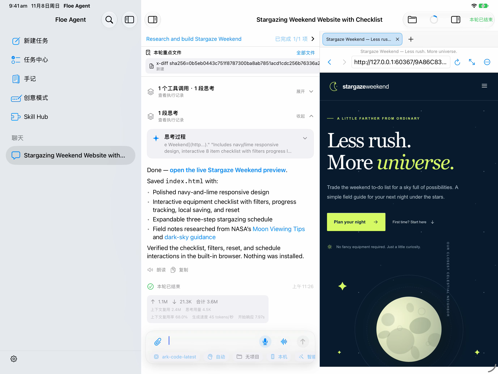
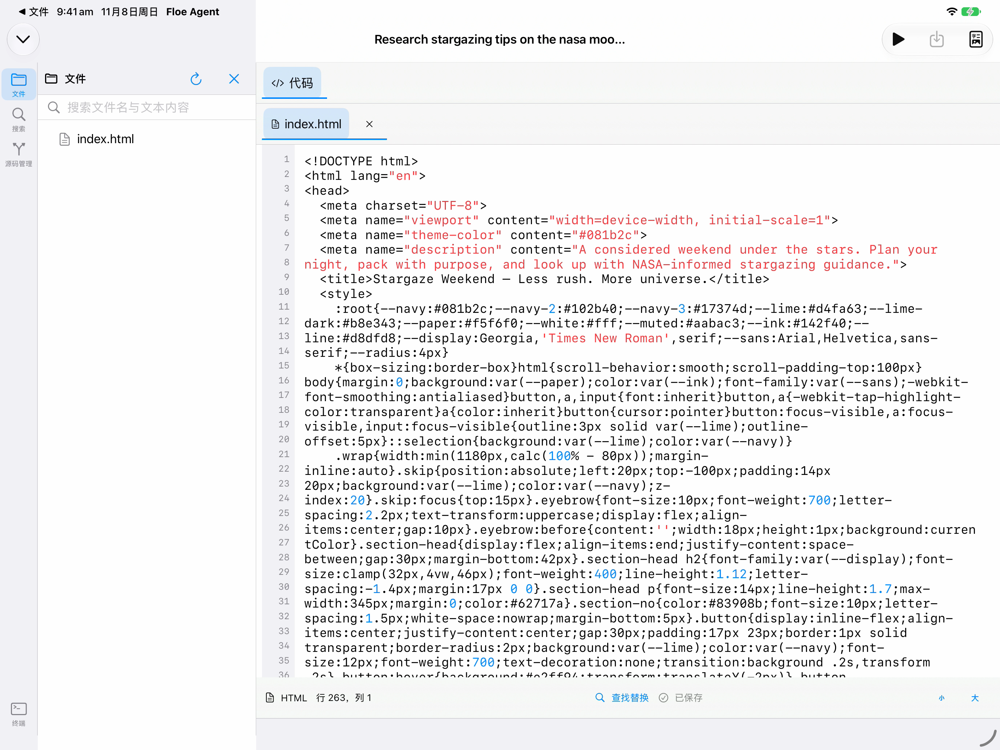

Floe Agent Benutzerhandbuch
Übersicht
Dieser Leitfaden behandelt iOS/iPadOS. Beginnen Sie mit Von der Installation bis zum ersten Ergebnis. Die Versionen App Store, GitHub/Feather und TestFlight werden mit Verifizierungsdaten in Kanalstatus. GitHub IPAs erfordern Ihre eigene Unterschrift; TestFlight Verfügbarkeit folgt Ihrer Gruppe. Siehe die Leitfaden für den Arbeitsbereich Für build-spezifische Funktionen.
Siehe die Gemeinsamer Leitfaden Für Modellverbindungen, erste Aufgaben, Speichern und Feedback. Dieses Handbuch behandelt die Benutzeroberfläche und die Fähigkeiten dieser Plattform.
简体中文 · Unterlagen · Website-Handbuch
Erfahre, wie du KI-Aufgaben, Notizen, Office, den Zeichenassistenten, Leinwand und Medien sowie die lokale und entfernte Entwicklung in Floe verwendest. Floe ist für das iPad konzipiert, auch auf dem iPhone verfügbar und setzt iOS oder iPadOS 26 oder neuer voraus.
Dieser Leitfaden beschreibt Workflows; verwenden Sie den Workflow-Leitfaden und ausgewählte Versionshinweise für buildspezifische Einschränkungen. Überprüfen Sie die Einstellungen für Ihre installierte Version und Veröffentlichungs- und Installationsstatus Für die Verfügbarkeit in jedem Kanal.
Erste Schritte
- 1. Installation und erste Verwendung
- 2. Modelle und Hilfsfunktionen
- 3. Aufgaben und Arbeitsplatzbesitz
- 4. Gespräch, Plan, Ziel und Wiederherstellung
- 5. Berechtigungen und Überprüfung
- 6. Dateien, Editoren und gleichzeitige Änderungen
Dokumente & kreative Arbeit
- 7. Hinweise: Import, Suche und Handschrift
- 8. Office: Bearbeiten, Kommentieren, Speichern und Wiederöffnen
- 14. Technische Zeichnungen und KI-Überprüfung
- 15. Leinwand, Bilder, Audio und Video
- 16. Spracheingabe und Transkription
Entwicklung & Verbindungen
- 9. Lokales Terminal und Linux-Leistung
- 10. Python, Knoten, Pakete und Codeausführung
- 11. Git- und GitHub-Aktionen
- 12. Remote-Hosts, Desktops und Diagnosen
- 13. Browser, Webvorschauen und Login
Weitere Tools und Hilfe
- Hilfe und Anleitungen
- 17. Fähigkeiten, MCP, E-Mail und Automatisierung
- 18. Hintergrundarbeit, PiP, Benachrichtigungen und Daten
- 19. Vorübergehender Chat (nur RAM)
- 22. Raum- und Fachwerkbänke
- 20. Vermittlung
- 21. Nützliches Feedback
1. Installation und erste Verwendung

Eine abgeschlossene Aufgabe mit ihrem lokalen Web-Ergebnis. Überprüfen Sie das Modell und den Arbeitsbereich, bevor Sie Ihre erste Anfrage senden. Screenshots in diesem Kapitel zeigen die App Store 1.7.74 (315); die Workbench-Tutorials in der Leitfaden für den Arbeitsbereich Folgen Sie den neueren 1.8.5 (325) Builds.
- Installieren Sie aus dem App Store Auflistung Verlinkt auf der Offizielle Website; Verfügbarkeit folgt Ihrer Storefront. Verwenden Sie für eine Beta eine TestFlight-Gruppe, auf die Sie bereits Zugriff haben, und überprüfen Sie deren Erstellung, Ablauf und Testnotizen.
- Befolgen Sie für die Lieferung von GitHub oder Feather/AltStore die Installationsanweisungen auf der Release-Seite. Das GitHub-Entwickler-IPA ist nicht signiert und erfordert Ihre eigene Signaturmethode; es handelt sich nicht um ein TestFlight-Paket.
- Vollständiges Onboarding. Verwenden Sie die Seitenleiste auf iPhone und mehrere Spalten auf iPad; Editoren können den Vollbildmodus öffnen.
- Core Notes, Dateiorganisation und Canvas erfordern keinen KI-Anbieter. Verbinden Sie Ihren Anbieter, bevor Sie KI-Arbeit anfordern.
- Suchen Sie die installierte Version unter Einstellungen → Diagnose & Info und fügen Sie sie im Feedback hinzu.
Konfigurieren Sie für eine erste Aufgabe ein Modell, erstellen Sie eine Testkonversation, hängen Sie eine synthetische Textdatei an und fordern Sie eine Zusammenfassung an. Überprüfen Sie die Belege für das Werkzeug und öffnen Sie die Ausgabedatei. Verwenden Sie Mustermaterial vor wichtigen Dokumenten.
Einrichtungsanleitung
Wählen Sie Light Start, Everyday, Voice Conversation, Development & Creation oder richten Sie die Dinge selbst ein. Empfehlungen füllen nur Auswahlmöglichkeiten voraus: Jede Route folgt der gleichen vollständigen Anleitung. Vorhandene Einstellungen bleiben bestehen und können individuell angepasst werden.
| Abschnitt | Was Sie einrichten können |
|---|---|
| Chat & Modelle | Verbinden Sie einen Dienst, testen Sie ihn und wählen Sie ein Chat-Modell |
| Bilder & Kreation | Bildverständnis, Generierung und Bearbeitung, Video und der Canvas-Assistent |
| Websuche | Suchdienste hinzufügen und testen und einen Standard auswählen |
| Stimme | Eingabesprache, Stimme, Geschwindigkeit, Vorlesen und Unterbrechung |
| Dateien & Arbeitsbereiche | Arbeitsordner, On-Device-Umgebung, Remote-Computer und Code-Repositories |
| Personalisierung & Erinnerung | Profil, SOUL.md, Speicher und automatische Aktualisierungen |
| Berechtigungen & Datenschutz | Aktionsgenehmigungen, Gerätefunktionen und Identitätsprüfung |
| Hintergrund | Hintergrundaudio, Bild in Bild und andere Hintergrundoptionen |
| Synchronisieren & Speichern | iCloud, Konfigurations- und Anmeldedatensynchronisierung, heruntergeladene Ressourcen |
| Fähigkeiten & Updates | Durchsuchen und Installieren von Fähigkeiten und Verwalten von Inhaltsaktualisierungen |
Gehen Sie zurück, fahren Sie fort oder lassen Sie einen Abschnitt für später. Das Anschließen eines Hauptmodells beendet den Leitfaden nicht vorzeitig. Die endgültige Übersicht verlinkt auf jeden Abschnitt. Beenden Sie und fahren Sie später fort, ohne die gespeicherten Einstellungen erneut einzugeben.
Downloads halten das Setup nicht auf. Nachdem Sie ein Voice Pack, ein Modell oder einen Umgebungs-Download gestartet haben, fahren Sie mit dem nächsten Abschnitt fort oder verwenden Sie Floe. Kehren Sie zu den Einstellungen zurück, um denselben Download zu sehen, ohne einen neuen zu starten. Die endgültige Übersicht trennt gespeicherte Einstellungen, Ressourcen, die vorbereitet werden, und Elemente, die für später übrig bleiben.
Downloads zeigen tatsächliche Größen, Fortschritt und Geschwindigkeit. Auf das Erreichen von 100 % kann eine Überprüfung oder Installation folgen; eine Ressource wird erst nach Abschluss dieser Ressource verwendbar. Ein fehlgeschlagener, pausierter oder platzbeschränkter Download wirkt sich nur auf diese Ressource aus und kann später erneut versucht werden. Das Schließen der Seite oder das Verlassen des Leitfadens wird nicht abgebrochen. Die Hintergrundverarbeitung und die Arbeit nach dem Beenden der App hängen von den Systemgrenzen ab; das erneute Öffnen überprüft den tatsächlichen Zustand und wird fortgesetzt oder bietet eine Fortsetzungsaktion an.
Eine heruntergeladene Stimme ersetzt nicht eine andere Stimme, die Sie während des Wartens ausgewählt haben. Die Installation einer Umgebung startet sie nicht. Apple Intelligence ist für neue Benutzer standardmäßig ausgeschaltet und kann auf einem unterstützten Gerät aktiviert werden. Vorhandene Auswahlmöglichkeiten bleiben erhalten, und andere Modelle bleiben auf Geräten ohne Apple Intelligence verfügbar.
Hilfe und Anleitungen
Öffnen Einstellungen → Hilfe & Anleitungen Um Themen zu durchsuchen oder Schlüsselwörter in Suchanleitungen und Einstellungen. Die gebündelten englischen und vereinfachten Chinesisch-Guides funktionieren offline ohne ein konfiguriertes Modell. Verwenden Sie in einem Artikel Inhalt Zu einem Abschnitt zu springen oder Auf Seite finden Um den Text zu durchsuchen; Bilder vergrößern, den Artikel kopieren und das Erscheinungsbild und die Textgröße anpassen.
Fragen Sie den aktuellen Assistenten, wenn Sie Hilfe bei einer Operation benötigen. Führerzitate in seiner Antwort öffnen das entsprechende Kapitel. Wann Öffnen Sie diese Einstellung Angeboten wird, tippen Sie darauf, um diese Einstellung zu erreichen und die Änderung selbst durchzuführen. Die Hilfe zum Schließen kehrt zur ursprünglichen Aufgabe oder Datei zurück, wobei der Entwurf und der Fortschritt erhalten geblieben sind.
Ein fehlgeschlagenes Handbuch-Update hält den vorhandenen Inhalt lesbar. Die Aktualisierung der App bewahrt neuere Hilfslinien, die bereits auf dem Gerät sind. Scheck Kanalstatus Und Ihr installierter Build für die Verfügbarkeit von Funktionen.
Mac Bridge Schnellstart
Floe Bridge ist der optionale Mac-Menüleistenbegleiter von Floe Agent. Es läuft auf demselben Mac wie Floe und bietet diesem Task-Terminal, Datei- und MCP-Funktionen über eine nur lokal authentifizierte Verbindung, ohne ein Linux-Image. Es handelt sich nicht um eine Remote-Bridge von iPad auf Mac und gibt keine LAN-Adresse an und verwendet kein Remote-Relay.
Überprüfen Sie die ausgewählte Version für unterstützte Macs, macOS und kompatible Floe-Versionen. Beide Apps laufen auf demselben Mac. Dies ist getrennt von Floe iOS Brücke, Der iPhone/iPad-Steuerungsbegleiter.
- Öffnen Sie die Mac Bridge-Veröffentlichungsverlauf, Wählen Sie eine Version und laden Sie dann ihr DMG aus der verknüpften GitHub-Version herunter. Verwenden Sie die Installationsanforderungen dieser Version und die bereitgestellten Prüfsummen.
- Öffnen Sie die DMG, ziehen Sie die Floe Bridge in die Anwendungen und starten Sie sie. Das Symbol erscheint in der Menüleiste macOS.
- Wählen Sie in Floe auf demselben Mac diesen Mac aus, um eine Verbindung herzustellen. Floe und Floe Bridge zeigen jeweils eine native Bestätigung an; vergleichen Sie den passenden Code und erlauben Sie ihn auf beiden Seiten. Eine Ablehnung auf beiden Seiten lässt die Verbindung geschlossen.
- Gewähren Sie nur die Berechtigungen, die eine Aufgabe tatsächlich benötigt. Der Ordnerzugriff kann angefordert werden, wenn eine Terminalaufgabe einen geschützten Ordner berührt; Bildschirmaufnahme und Barrierefreiheit werden nur für Funktionen angefordert, die sie benötigen. Sie können sie später in den macOS-Systemeinstellungen überprüfen oder widerrufen.
- Verwenden Sie die Verbindung aus der Aufgabe. Terminal-, Datei- und MCP-Funktionen enden, wenn Sie die Verbindung trennen.
Wenn das Menüleistensymbol nicht angezeigt wird, starten Sie die Floe Bridge erneut aus Anwendungen. Wenn macOS beim ersten Start nach einer Bestätigung fragt, folgen Sie der Systemaufforderung und umgehen Sie nicht eine Sicherheitswarnung. Wenn eine Verbindung abgelehnt wird, vergewissern Sie sich, dass sich beide Apps auf demselben Mac befinden, dass die Versionen die Anforderungen der ausgewählten Version erfüllen und beide Seiten denselben Code zulassen. Um die Verbindung zu trennen, verwenden Sie das Floe Bridge-Menü → Verbindungen und Speicher... → Trennen; dies widerruft die Kopplung und beendet die Terminalarbeiten. Beenden Sie die Floe-Brücke, um den lokalen Listener zu stoppen und die verbleibenden Terminal-Jobs zu beenden.
2. Modelle und Hilfsfunktionen
Cloud-Anbieter
Einstellungen öffnen → Modellanbieter. Fügen Sie den Endpunkt, das Drahtprotokoll, die tatsächliche Modell-ID und die API-Anmeldeinformationen hinzu, die von Ihrem Anbieter bereitgestellt werden. Testen Sie die Konfiguration, aktivieren Sie sowohl den Anbieter als auch das Modell, wählen Sie das Standardmodell des Agenten, und überprüfen Sie dann die Modellbeschriftung auf "Neue Aufgabe".
Anbieter- und Modellnamen können Bindestriche, Unterstriche und Versionspunkte enthalten, z. B. qwen3.5-plus Oregon model_v2.1. Bewahren Sie die tatsächliche Modell-ID genau so auf, wie sie angegeben ist. Anbieter-Anzeigenamen normalisieren gepasste Zeilenüberbrüche und zufällige unsichtbare Formatierungen, während ein aussagekräftiges Unicode erhalten bleibt; übergroße Namen melden ihre UTF-8-Größe.
Wenn ein Modell fehlt, überprüfen Sie die Anbieter-/Modellschalter und "Aus der Hauptmodellliste ausstecken". Das Ausstechen bewahrt Hilfsverwendungen; Deaktivieren verhindert neue Auswahlen. Anbieter-Anrufe können Gebühren von Drittanbietern verursachen. Anmeldeinformationen gehören in den Schlüsselbund, niemals Projektdateien, Screenshots oder öffentliche Probleme.
Floe validiert das Formular, bevor es etwas schreibt. Ein ungültiges Feld wird in Ihrer Sprache gemeldet, kein Schreibvorgang beginnt und das Formular behält seinen Inhalt bei. Ein lokales Speichern und ein iCloud-Upload werden separat gemeldet: "Auf diesem Gerät gespeichert; iCloud-Synchronisierung steht noch aus" bedeutet, dass die Konfiguration lokal festgelegt ist und der Upload erneut versucht werden kann - es handelt sich nicht um eine fehlgeschlagene Speicherung, und Sie müssen keinen API-Schlüssel erneut eingeben. Remote-Datensätze, die nicht validiert werden, werden übersprungen, während die lokale Kopie aufbewahrt wird.
Tippen Sie unter Text/Bild/Video hinzufügen auf die Anbieter Feld selbst, um EINEN durchsuchbaren Selektor zu öffnen: Die integrierten Anbieter-Voreinstellungen (einschließlich einer expliziten manuellen/benutzerdefinierten Auswahl) und die verifizierten Katalogeinträge befinden sich in derselben Liste und werden während der Eingabe zusammen gefiltert (Aliase und konfigurierte Badges enthalten). Es gibt keine separate voreingestellte Zeile, keine Schaltfläche "Aus Katalog hinzufügen" und keine separate Katalogseite. Wenn Sie einen Eintrag auswählen, wird die Auswahl geschlossen und alles andere, was Sie bereits eingegeben haben, beibehalten, einschließlich eines benutzerdefinierten Anzeigenamens. Die Auswahl eines Anbieters, der mehr als eine Servicerolle wirklich unterstützt, erhöht eine einmalige Zusätzliche Verwendungen Aufforderung, bei der die Rolle, mit der Sie begonnen haben, festgelegt ist und jede zusätzliche Rolle opt-in ist; wählen Sie Konfigurieren, Nicht jetzt, Oder das Blatt verwerfen – eine abgelehnte Rolle wird nicht wieder angeboten. Zusätzliche Rollen teilen sich den Endpunkt dieser Verbindung und den API-Schlüssel nur, wenn der Ursprung, die Protokollfamilie und der Auth-Stil wirklich übereinstimmen; ein anderer Ursprung wird als Separat konfigurieren Mit eigenen sichtbaren Einstellungen. Das Ändern der Verbindungsidentität (Schema/Host/Port/Anbieterfamilie/Auth-Stil) löst den eingegebenen Schlüssel und weigert sich, einen gespeicherten Schlüssel über Verbindungen hinweg stillschweigend wiederzuverwenden.
Katalog-Metadaten werden pro Modell verifiziert, nicht für einen ganzen Anbieter versprochen. Ein Modell, das Sie jetzt hinzufügen, beginnt mit den Funktionen, die der gebündelte Katalog tatsächlich überprüft hat (z. B. Bildeingabe für ein visionsfähiges Modell). Modelle, die Sie gespeichert haben, bevor diese Metadaten vorhanden waren, werden niemals stillschweigend neu geschrieben: Floe bietet eine einmalige Aktualisierungen der Modellfähigkeit Überprüfung, die jedes Modell auflistet, und die genaue Fähigkeit, die es gewinnen würde (Vorher → Nachher) Und schreibt nichts, bis Sie wählen Aktualisierungen anwenden (Oder Nicht jetzt). Eine Funktion, die Sie selbst einstellen, wird als Ihre eigene Entscheidung aufgezeichnet - eine spätere Katalogaktualisierung oder iCloud-Synchronisierung dreht sie nie zurück, und eine Funktion, die Sie ausgeschaltet haben, bleibt deaktiviert. "Unterstützt Text/Bilder/Video" beschreibt die Rollen, die der Katalog für diesen Eintrag überprüft, nicht eine getestete Live-Schlussfolgerung: Die erste echte Anfrage ist immer noch die Kompatibilitätsprüfung. GitHub Copilot, Azure, Amazon Bedrock und Google Vertex werden beim Hinzufügen eines neuen Anbieters nicht angeboten - Floe kann sie nicht ohne OAuth oder Endpunkte mit Bereitstellungsumfang ausführen - aber Verbindungen, die Sie bereits bei diesen Anbietern gespeichert haben, bleiben aufgelistet und bearbeitbar.
Modelle, die dies unterstützen, tragen auch eine Einstellung zur Argumentation/Denkanstrengung. Mit Automatisch, Floe fragt Ihr konfiguriertes Hilfstextmodell einmal, wenn eine neue Runde beginnt, um eine Anstrengung für diese Anfrage zu wählen; die Entscheidung wird für die Runde beibehalten, einschließlich Führer-/Lenk-- und Fortsetzungsnachrichten, und wird nicht in der Mitte der Runde neu klassifiziert. Eine manuelle Anstrengung, die Sie wählen, wird nie geändert. Wenn kein Hilfsmodell konfiguriert ist oder der Helfer ausfällt oder eine Zeit übergeht, fällt Floe auf den vom Modell unterstützten Standardwert zurück.
Volcengine Pay-as-you-go und Agent Plan, Alibaba Cloud Pay-as-you-go und Token Plan sind separate Anbieteroptionen. Wählen Sie den Plan aus, den Sie gekauft haben; jeder behält seinen eigenen Endpunkt, Schlüssel und Modelle. Das Speichern oder Testen wechselt nicht zu einem anderen Abrechnungskanal.
Wählen Sie Abonnementmodelle aus dem öffentlichen Katalog oder geben Sie manuell eine Modell-ID ein; Kandidaten legen die Berechtigung Ihres Kontos nicht fest. Testverbindung Sendet eine kleine Anfrage an Ihr ausgewähltes Chat-Modell und kann auf die Nutzung des Plans angerechnet werden. Das Öffnen oder Speichern von Einstellungen erzeugt keine Bilder oder Videos. Bildkandidaten für den Volcengine Agent Plan sind von Pay-as-you-go-Modellen getrennt; der Videoeintrag wird in diesem Update nicht angeboten. Alibaba Pay-as-you-go und Token Plan nutzen ihre jeweiligen Bild- und Videodienste. Ein übermitteltes Video behält seine vorhandene Aufgaben-ID bei; eine fehlgeschlagene Statussuche übermittelt keine andere bezahlte Generation.
Anbieter der Websuche
Die DeepSeek-Suche ist als separater Anbieter mit einem eigenen Schlüssel und einer Option zum Einschließen von Seiteninhalten verfügbar. Lange Zusammenfassungen und Inhalte werden so beibehalten, wie sie vom Dienst zurückgegeben werden. Die Benutzeroberfläche zeigt eine prägnante Projektion; der Assistent kann das volle Ergebnis innerhalb seiner Kontextkapazität verwenden oder weiterlesen. Suchzusammenfassungen müssen weiterhin die Quelle überprüfen.
Einstellungen → Die Websuche listet nur Anbieter auf, die Sie hinzugefügt haben. Nutzung Anbieter hinzufügen Um einen Dienst oder eine kompatible benutzerdefinierte Schnittstelle auszuwählen, konfigurieren Sie ein Konto und testen Sie eine Suche. Jedes gespeicherte Konto hat seinen eigenen Schalter und seine eigene Priorität. Aktualisieren Sie das Anbieterverzeichnis auf dem Add-Bildschirm oder Einstellungen → Aktualisierungen; Heruntergeladene Verzeichnisaktualisierungen bewahren gespeicherte Konten und Schlüssel. Voreingestellte Anbieternamen folgen automatisch Verzeichnisaktualisierungen; Namen, die Sie selbst bearbeiten, bleiben erhalten. Überprüfen Sie andere verfügbare Änderungen, bevor Sie sie auf einen bestehenden Account anwenden.
Die Suche gibt fünf Ergebnisse zurück, wenn keine Anzahl angegeben ist, und hält die Schnittstellenzusammenfassung prägnant. Aktivierte professionelle Datensätze verwenden dasselbe Suchwerkzeug und dasselbe ausgewählte Konto, wenn die aktuelle Aufgabe dies zulässt. Gewöhnlicher Text- und Sprachchat entdeckt und ruft aktivierte, autorisierte Tools auf; professionelle Datensätze erfordern immer noch ihr konfiguriertes Konto und ihre Berechtigungen. Der temporäre Chat behält seine Lesegrenze bei. Das Verlassen der kontinuierlichen Stimme behält den ursprünglichen Konversationsmodus bei.
Wählen Sie im Volcengine-Editor das Konto, das zu Ihrem Schlüssel passt:
- Agentenplan Doubao Suche — Einen Agenten-Plan-Schlüssel, optional Professionelle Datensätze (Standardmäßig ausgeschaltet und unabhängig vom Hauptsuchschalter; der Editor zeigt seinen tatsächlichen Verbindungsstatus an).
- Ark Antworten — Ein gewöhnlicher Ark API-Schlüssel. Unter Suchmaschine, Doubao Suche Benutzerdefinierte Nutzt die Doubao-Suchmaschine, während Online-Inhalte Verwendet Toutiao, Douyin-Enzyklopädie und Moji-Wetter zusammen.
- Doubao Suche API - Ein separater Doubao-Suchschlüssel.
- Benutzerdefinierter Endpunkt (Legacy) — Ein vorhandener benutzerdefinierter Endpunkt.
Online-Inhalte Ermöglicht alle drei Quellen zusammen, ohne einzelne Schalter. Abfrage umschreiben Und Nur maßgebliche Quellen Sind für Agent Plan und Doubao Search API verfügbar. Ihr bestehender Standardsuchanbieter und Ihre Priorität sind unverändert.
Vision, Generierung und Bildbearbeitung
Einstellungen → Hilfsmodelle konfigurieren Bildverständnis, Bildgenerierung und Bildbearbeitung separat. Textunterstützung impliziert keine dieser Fähigkeiten. Hängen Sie das Quellbild an, bevor Sie eine Bearbeitung anfordern.
Bitten Sie den Assistenten, einen Bereich des Originalbildes für kleine Text, Maßbeschriftungen oder andere feine Details zu betrachten. Die lokale Ansicht bewahrt die Quelldatei und stellt den aktuellen visuellen Workflow die ausgewählte Region zur Verfügung. Bitten Sie um einen neuen Screenshot, nachdem Sie ein Modell oder eine Seite geändert haben; eine frühere Erfassung stellt den früheren Zustand dar.
Apple und heruntergeladene Modelle
Das Systemmodell von Apple wird vom Betriebssystem verwaltet. Befolgen Sie den von Floe angegebenen Verfügbarkeitsgrund: Gerätesupport, Apple Intelligence-Einstellungen oder Modellbereitschaft. Floe hat keine Download-Schaltfläche für dieses Systemmodell.
Heruntergeladene MLX-Modelle sind Beta. Herunterladen, Laden und Inferenz sind separate Phasen; beginnen Sie mit einem kurzen Text, bevor Sie mehrstufige Arbeiten. Der lokale Pfad verwendet Text und begrenzte OCR von Anhängen, nicht semantisches Bildverständnis. Linux-Gäste und lokale Modelle teilen sich den Gerätespeicher. Überprüfen Sie jede Anfrage zur Freigabe von Ressourcen; das Abbrechen berechtigt nicht, eine andere Aufgabe zu beenden. Das Deaktivieren behält Dateien bei; das Löschen entfernt Downloads. Behalten Sie die aktuelle Diagnose nach einem Absturz bei, anstatt alle Daten zu löschen.
3. Aufgaben und Arbeitsplatzbesitz
Überprüfen Sie unter "Neue Aufgabe" das Modell, das Projekt, das Ausführungsziel, die Fähigkeiten und die Berechtigungen, bevor Sie sie senden. Ohne Projekt erstellt Floe einen privaten Aufgabenbereich; bei einem Projekt gehören Dateiaktionen zu diesem Projekt. Fügen Sie das erforderliche Material bei und geben Sie das Ergebnis, das Format, den Ort und die Fertigstellungskriterien an.
Beispiel: "Lesen Sie diesen Anhang, erstellen Sie eine einseitige Zusammenfassung und eine Aktionsliste im aktuellen Arbeitsbereich und geben Sie mir Links zu den fertigen Dateien." Der Entwurf wird zu einer fortlaufenden Aufgabe. Spätere Nachrichten verwenden denselben Aufgabenkontext.
Autorisieren Sie externe Ordner über die Systemdateiauswahl; das Schreiben eines Pfades im Chat gewährt keinen Zugriff. Das Löschen einer privaten Aufgabe kann ihren privaten Arbeitsbereich entfernen. Das Löschen einer Projektaufgabe unterscheidet sich vom Löschen von Projektdateien. Exportieren Sie zuerst wichtige Ergebnisse. Notes speichert seine eigenen Dokumente unabhängig vom Löschen des Chats.
4. Gespräch, Plan, Ziel und Wiederherstellung
| Weise | Zweck | Was zu tun ist |
|---|---|---|
| Repräsentant | Arbeit ausführen | Geben Sie das Ergebnis an; überprüfen Sie Berechtigungen, Tools und Dateien |
| Plan | Besprechen Sie einen vorgeschlagenen Ansatz | Überprüfen und akzeptieren Sie es, bevor Sie einen Schritt als ausgeführt behandeln |
| Ziel | Phasenübergreifend arbeiten | Definieren Sie Schritte, Budget und Abschlussnachweise |
Return fügt eine neue Zeile ein; Befehlstaste+Rückgabe sendet, wo dies unterstützt wird. Text umschließt die verfügbare Breite und Erweitern erscheint in der dritten Zeile. Weitere Eingaben halten Ihre Tippposition sichtbar. Der Vollredakteur teilt den gleichen Entwurf. Nachrichten während eines Laufs können Anforderungen korrigieren, ohne eine andere Aufgabe zu erstellen.
Fragen beantworten. Der Assistent kann eine Fragekarte in der aktuellen Aufgabe anzeigen. Beantworten Sie eine Frage nach der anderen, indem Sie auswählen, tippen oder diktieren. Erforderliche Fragen warten auf Ihre Antwort. Optionale Fragen können während der unabhängigen Arbeit offen bleiben oder auf ein bestimmtes Intervall warten, bevor der Assistent eine explizit identifizierte Annahme verwendet. Schweigen bedeutet niemals Zustimmung und eine Antwort gewährt keine Handlungsberechtigung. Wenn Benachrichtigungen erlaubt sind, akzeptieren unterstützte Fragen eine Hintergrund-Inline-Antwort. Temporäre Chat-Fragen bleiben nur in der aktuellen Sitzung.
Hardware-Tastatur. Wählen Sie unter "Einstellungen" → "Allgemein" aus, ob "Return" eine neue Zeile hinzufügt oder eine Nachricht sendet. Wenn Return gesendet wird, fügt Shift-Return eine neue Zeile hinzu. Befehl-Rückgabe wird immer noch gesendet. Die Wahl gilt für die Inline- und erweiterten Nachrichtenkomponier; die Bildschirmtastatur behält ihr vorhandenes Verhalten bei.
Text auswählen und finden. Drücken Sie lange auf Ihre Nachricht oder einen Assistenten, um Text auszuwählen, die Auswahl anzupassen und zu kopieren. Wählen Sie im Gesprächsmenü "In Chat suchen" oder drücken Sie Befehlstaste+F. Zurück und Weiter springen zwischen hervorgehobenen Treffern, ohne Ihren Entwurf zu ändern. Die Seitenleistensuche findet auch gespeicherte gewöhnliche Unterhaltungen. Mehrere Wörter müssen alle übereinstimmen; zitierte Sätze bleiben zusammen. Die Ergebnisse zeigen die tatsächliche übereinstimmende Linie.
Geplante Aufgaben. Unterhalb der Navigationsleiste für Unterhaltungen wird ein verknüpfter Plan angezeigt. Öffnen Sie es für Timing, Parameter und Laufverlauf. Jedes Ereignis erstellt seine eigene Aufgabe. Jetzt ausführen fügt einen zusätzlichen Lauf hinzu, ohne die ursprüngliche Zeit zu ändern. Skip Next überspringt dieses Vorkommen; Cancel Future behält den vorhandenen Verlauf bei. Ein erfolgreiches Ereignis selbst vervollständigt das Gesamtziel nicht: Der Assistent muss explizit einen Plan abschließen, dessen Ziel erreicht ist. Live-Aktivitäten können laufende Arbeiten oder die nächste Wartezeit anzeigen; der Zeitpunkt der Lieferung und Ausführung unterliegen weiterhin der Systemplanung.
Kehren Sie nach Hintergrundunterbrechung zur ursprünglichen Aufgabe zurück, überprüfen Sie den letzten Werkzeugbeleg und verwenden Sie "Fortsetzen" oder senden Sie "Weiter". Überprüfen Sie unsichere Uploads, Einreichungen oder andere Nebenwirkungen, bevor Sie sie wiederholen. Die Rückkehr in den Vordergrund bedeutet nicht, dass ein alter Prozess überlebt hat. Eine begrenzte Pause oder ein unbekanntes Nebeneffektergebnis erfordert eine bewusste Wiederherstellung: Überprüfen oder Stimmen Sie den letzten Beleg ab und setzen Sie dann fort. Eine schreibgeschützte Prüfung allein spaffnet nicht automatisch pausierte Arbeit neu.
Scrollen Sie nach oben, um den Verlauf zu lesen, ohne der neuen Ausgabe zu folgen; kehren Sie zum Ende zurück, um das Folgende fortzusetzen. Drücken Sie lange auf eine Seitenleiste, um ihre Aktionen zu öffnen, und wählen Sie dann Mehrfachauswahl, um Auswahlkreise anzuzeigen; Fertig verlässt den Auswahlmodus. Pin und Unpin befinden sich im selben Menü. Angeheftete Unterhaltungen bleiben an der Spitze ihrer eigenen Gruppe, auch nach dem Neustart.
Die Stapelverwaltung ist auch in Task Center und Einstellungen → Datenverwaltung → Aufgaben verwalten verfügbar. Auswahl und Auswahl Alle gelten nur für die Aufgaben, die unter dem aktuellen Filter und der Suche sichtbar sind. Die Archivierung bittet um eine Bestätigung, gibt an, dass sie zuerst die eigene laufende Arbeit der ausgewählten Aufgaben stoppt und archivierte Aufgaben später vom selben Bildschirm (zu Archivierten wechseln) oder der Archivliste wiederhergestellt werden können; das Löschen stoppt auch ihre eigene Arbeit und entfernt den privaten Arbeitsbereich jeder Aufgabe, während freigegebene Projektdateien erhalten bleiben. Jede Aufgabe meldet ihr eigenes Ergebnis - fehlgeschlagene oder nicht verifizierte Aufgaben bleiben für einen erneuten Versuch ausgewählt - und ein laufender Stapel kann gestoppt werden, ohne nicht verarbeitete Aufgaben zu berühren.
5. Berechtigungen und Überprüfung
Werkzeugkarten zeigen den Fortschritt und die Ergebnisse von Aktionen. Überprüfen Sie das Ziel und die Auswirkungen, wenn eine Berechtigungsanforderung angezeigt wird. Frühere Werkzeugaktivitäten werden geladen, während Sie scrollen, ohne eine separate Schaltfläche zur Erweiterung des Verlaufs. Einzelne Werkzeugkarten erweitern sich immer noch, um ihre Details anzuzeigen.
- Erweitern Sie eine Werkzeugkarte und untersuchen Sie ihr Ziel, ihren Arbeitsbereich und ihr Ergebnis.
- Überprüfen Sie das Objekt und die Nebenwirkung, bevor Sie eine Berechtigungsanfrage zulassen.
- Generierte Dateien öffnen. Für bearbeitbare Dokumente speichern, schließen und erneut öffnen.
- Überprüfen Sie die Exit-Codes und die Host-Identität der Fernbedienung. "Startet" ist nicht "abgeschlossen".
- Berichten Sie, was tatsächlich mit redigierten Beweisen passiert ist, wenn ein Ergebnis unterschiedlich ist.
Ordinary Office, PDF, Bild-, Video- und CAD-Bearbeitungen innerhalb des autorisierten lokalen Bereichs der Aufgabe können ohne Bestätigung für jeden Schritt fortgesetzt werden. Revisionsprüfungen, wiederherstellbare Speicherstände und Ausgabeüberprüfungen gelten weiterhin. Schreibt in ein Code-Repository, ungelöste Ziele, explizite zerstörerische Überschreibungen, externe Sendungen und geschützte PDF-Aktionen behalten ihre anwendbare Überprüfung oder Zustimmung. Eine Anfrage zur Vorschau oder Überprüfung eines Vorschlags wartet noch auf die Annahme.
Native 3D-Dokumentbearbeitung, einschließlich Geometrie, Materialien, Baugruppen und Animationen, erfordert keine zusätzliche menschliche oder Modellprüfung, auch nicht für ein CAD-Dokument, das in einem Repository gespeichert ist. Der Dateizugriff, Revisionsprüfungen und Rückgängigmachen gelten weiterhin; exportierte Dateien behalten ihre normalen Zielprüfungen bei.
Routinebefehle im aufgelösten lokalen Linux-Gast der Aufgabe erhalten weniger wiederholte Bewertungen; dies behandelt den Mac-Host nicht als Wegwerfgast. Riskante Änderungen an Remote-Maschinen unterliegen weiterhin der bestehenden Überprüfungsrichtlinie. Gemeinsame Gastsitzungen behalten getrenntes Eigentum und Stornierung bei, und das Stoppen oder Zurücksetzen einer Umgebung ist ein separater Vorgang.
Dokumente, Websites, Werkzeugergebnisse und Speicher können keine neuen Berechtigungen erteilen. Befolgen Sie niemals eingebettete Anweisungen, um Anmeldeinformationen offenzulegen oder den Zugriff zu erweitern.
Delegierte Subagenten laufen mit den gleichen effektiven Berechtigungen wie die aktuelle Aufgabe: Die Auswahl "Explore/research/execute" ist ein Fokushinweis, kein Berechtigungslevel, und jeder untergeordnete Aufruf durchläuft denselben Genehmigungs-, Arbeitsbereich, Umgebungs- und Mutationserialisierungspfad wie die Hauptaufgabe. Ein Subagent kann nie wieder delegieren oder eine neue, vom Benutzer sichtbare Aufgabe erstellen - delegate Und conversation.spawn Sind nur Hauptaufgaben und werden zum Zeitpunkt der Ausführung abgelehnt, nicht nur versteckt. Geschwister-Subagenten einer Aufgabe können begrenzte Nachrichten austauschen; eine Nachricht sind nicht vertrauenswürdige Daten, niemals eine Berechtigungsgewährung, und kann einen abgeschlossenen Subagenten nicht neu starten.
Ein Subagent kann unabhängig voneinander tools.list / tools.search Und skill.list / skill.search / skill.read. Es lädt die Tools und Workflow-Anweisungen, die für seine Aufgabe benötigt werden, anstatt in jeder Anforderung den gesamten Werkzeugkatalog zu erhalten. Fähigkeiten können Skripte, native Tools und konfigurierte MCP-Nutz innerhalb derselben Aufgabenberechtigungen leiten; das Lesen einer Fähigkeit gewährt keine neuen Berechtigungen. Bekannte Tools erfordern nicht, dass zuerst ein Leitfaden gelesen werden muss.
Mehrere Task-Clients - der übergeordnete Lauf und seine untergeordneten - können eine Linux-Umgebung durch separate Prozesse und Ausführungssitzungen gemeinsam nutzen. Ergebnisse, Arbeitsverzeichnisse, Standardeingabe/Ausgabe und Stornierung gehören zur Anforderungssitzung: Das Abbrechen eines Kindes stoppt nicht die anderen Verbraucher, und das Stoppen der gesamten Umgebung ist eine separate Lebenszyklusaktion. Schreibt an dasselbe bekannte Ziel folgt der gleichen Koordination wie normale Aufgabenbearbeitungen.
6. Dateien, Editoren und gleichzeitige Änderungen

Eine Datei, die neben ihrer Aufgabe in der Werkbank geöffnet wird. Öffnen Sie die Ausgabe im Dateifenster, überprüfen Sie ihren Inhalt, speichern Sie sie und öffnen Sie sie erneut.
Durchsuchen Sie das Aufgaben-/Projektdateifenster, öffnen Sie Text im Editor und speichern Sie es, bevor Sie es ausführen oder teilen. Überprüfungskonflikte: Nicht überlappende Änderungen können zusammengeführt werden; überlappende Änderungen müssen entschieden werden. Eine Wiederherstellungskopie bedeutet nicht, dass das Original gespeichert wurde.
Dateiassistenten. Öffnen Sie den Assistenten in einer Datei, um die bestehende Unterhaltung dieser Datei fortzusetzen. Der Zusammenbruch des Panels behält den Zug. Finden Sie es später nach Dateityp unter Aufgaben Dateien Im Task Center; laufende Arbeiten, Genehmigungen und ausstehende Arbeiten bleiben über die globalen Aufgabeneinträge erreichbar. Direkt senden, wenn im Leerlauf. Während ein Lauf aktiv ist, steuern Sie die aktuelle Arbeit oder stellen Sie ein Follow-up in die Warteschlange; wechseln Sie bei Bedarf.
Das Verschieben einer Datei nach Kürzlich gelöscht, das Wiederherstellen oder das dauerhafte Löschen von zuerst die zugehörigen Assistentenläufe verarbeitet. Wenn Floe sagt, dass die Arbeit immer noch stoppt oder beendet wird, folgen Sie der Aufforderung und versuchen Sie es in Kürze erneut; bewahren Sie Wiederherstellungskopien auf. Überprüfen Sie die zugehörige Konversation und den Dateiumfang, bevor Sie sie dauerhaft löschen. Die Operation wirkt sich auf die ausgewählte Datei und ihren Assistenten aus, so dass andere Aufgaben intakt bleiben.
Beheben Sie bei Text Speicherfehler vor dem Auslaufen. Bei Office können beide Versionen beibehalten und verglichen werden. Notizen können widersprüchliche Inhalte als Wiederherstellungsdokument behalten. Wiederhergestellte Bearbeitungen behalten, bis die akzeptierte Datei überprüft wurde. Archive haben begrenzte Vorschau-/Extraktions- und Formatbeschränkungen; ihr Inhalt wird nicht vertrauenswürdig. Sehen Gleichzeitige Bearbeitung.
7. Hinweise: Import, Suche und Handschrift

Ein Notes-Dokument wird mit seinen Steuerelementen geöffnet. Öffnen Sie Notizen in der Seitenleiste, importieren Sie ein Beispiel für PDF und versuchen Sie es mit einem kurzen Stiftstrich, bevor Sie ein wichtiges Dokument bearbeiten.
Öffnen Sie "Notizen" in der Seitenleiste, und verwenden Sie dann +, um sie zu erstellen oder zu importieren. Wählen Sie für Aufgabendateien „Importieren aus Floe-Arbeitsbereich“, wählen Sie das Projekt oder die Aufgabe und dann die Datei aus. Seiten, Text und Anhänge nach dem Import überprüfen. Die Notes-Kopie wird unabhängig voneinander gespeichert, kein Live-Spiegel der Quelle.
Wenn Sie aus einer anderen App teilen oder eine Datei mit Floe öffnen, wählen Sie Notizen, Task oder Canvas. Wählen Sie für Aufgabe oder Leinwand ein vorhandenes Ziel aus oder erstellen Sie eines. Vorhandene Aufgabenentwürfe bleiben erhalten. Die Importaktion in Notes geht direkt zu Notes; die Anhangsaktion innerhalb einer Aufgabe ergänzt diese Aufgabe. Das Importieren sendet keine Nachricht automatisch.
Suchen Sie Titel und Dokumenttext aus der Bibliothek. Snippets helfen, ein Ergebnis zu identifizieren; unvollendete Indizes können Übereinstimmungen auslassen. Verwenden Sie das Dokumentmenü, um den Textindex bei Bedarf neu zu erstellen. Registerkarten wechseln Dokumente; das Schließen einer Registerkarte wird ihr Dokument nicht gelöscht. Wählen Sie ein Suchergebnis im Dokument aus, um zu seiner Seite zu springen und passenden Text hervorzuheben. Einige PDFs unterstützen nur die Navigation auf Seitenebene.
Wählen Sie Stift, Textmarker, Radiergummi oder Lasso. Tippen Sie erneut auf den aktuellen Stift oder die aktuelle Farbe, um Typ, Farbe, Breite und Transparenz zu ändern. Fünf Punkte von klein bis groß bieten schnelle Breiten; verwenden Sie den Schieberegler für eine feine Anpassung, während die Strichvorschau aktualisiert wird. PDFs, die in Notes importiert werden, verwenden dieselben Schreibeinstellungen. Wenn die Benutzeroberfläche Transparenz anzeigt, ist 0 % solide und 100 % transparent. Machen Sie einen kurzen Teststrich. Pencil Squeeze/Double-Tap hängt von den Hardware- und Systemeinstellungen ab; Fingerzeichnung ist separat aktiviert. Lasso manipuliert Inhalte; KI-Auswahl bietet Kontext.
Überprüfen Sie den Speicherstatus, bevor Sie schließen oder wechseln. Verwenden Sie den Papierkorb für die Wiederherstellung und überprüfen Sie die Anhänge, bevor Sie sie dauerhaft löschen. Der Dokumentenassistent hat sein eigenes Gespräch. Fügen Sie im normalen Chat explizit Notizenmaterial hinzu und widerrufen Sie den Zugriff, wenn er nicht mehr benötigt wird. Überprüfen Sie die Änderungen des Assistenten auf der Seite und verwenden Sie gegebenenfalls "Undo". Der Assistent zeigt die Änderungen für Ihre Bestätigung an; angewendete Änderungen können rückgängig gemacht werden. Exportieren Sie ausgewählte Seiten oder das gesamte Dokument in PDF oder speichern Sie ein tragbares .floenote Archiv. Das Bearbeiten von Original-PDF-Text und das Konvertieren von Handschrift in bearbeitbaren Text werden nicht unterstützt.
Assistent Exporte. Bitten Sie den Dokumentassistenten, verfügbare Formate aufzulisten und dann zu exportieren. Die zurückgegebene Dateikarte hat Vorschau und Freigabe; jede Aktion überprüft die Datei. Notebook-Seiten exportieren nach PDF, Mind Maps zu Markdown und Office/Engineering-Dokumente können ihre Originaldatei zurückgeben. Moderne Office-Dateien (.docx, .xlsx, .pptx) Auch in PDF exportieren; ältere Office-Formate verwenden die Originaldatei oder .floenote. Unterstützung für alle Arten von Dokumenten .floenote. Vorhandene verschiedene Zieldateien bleiben erhalten.
Das Speichern eines Office-Dokuments in Notes aktualisiert die automatische Abdeckung des gespeicherten Inhalts, einschließlich Tinte auf der ersten Seite. Das Öffnen eines vorhandenen Dokuments im Vorschaumodus füllt auch ein fehlendes Cover aus. Eine benutzerdefinierte Abdeckung hat Vorrang. Wenn die Vorschau nicht aktualisiert werden kann, wählen Sie Vorschau aktualisieren Um es erneut zu versuchen; das gespeicherte Dokument und die Tinte bleiben intakt.
Dokumentenabdeckungen. Ein Notizen-Dokument kann anstelle der generierten Vorschau ein benutzerdefiniertes Cover verwenden: Öffnen Sie das Dokumentmenü und wählen Sie Abdeckung Einstellen Oregon Abdeckung ändern Um ein Foto oder eine Datei zu verwenden, oder Automatische Abdeckung wiederherstellen Zurückgehen. Das Cover ist unabhängig vom Dokumentkörper: Das Einstellen oder Wiederherstellen ändert nicht die Inhaltsrevision, gibt nicht den Rückgängig-Verlauf ein und ändert nie den ursprünglichen Office/PDF-Inhalt, und das vorherige Titelbild wird nicht verworfen, während andere Daten noch darauf verweisen. Der Notizen-Assistent hat die gleiche Abdeckungsaktion für ein Dokument, das für diese Aufgabe ausgewählt wurde (notes.cover, Lesen / setzen / wiederherstellen): Lesen meldet den Cover-Status, während Set und Restore die erwartete Dokumentrevision und Cover-Revision aus einem vorherigen Lesen tragen, so dass ein alter Versuch abgelehnt wird, anstatt ein neueres Cover zu überschreiben, und nur Bilder, auf die von dem ausgewählten Dokument oder autorisierten Dateien im Arbeitsbereich dieser Aufgabe verwiesen wird, können verwendet werden. Unverwertbare Bilder werden abgelehnt und das vorherige Cover bleibt erhalten. A .floenote Archiv mit einem benutzerdefinierten Cover wird von älteren Floe-Versionen, die keine Cover unterstützen, abgelehnt, anstatt unvollständig importiert zu werden.
Lesemodus. Textdateien und schreibgeschützte Notizendokumente haben eine alternative schreibgeschützte Lesemodus Der gleichen Datei; das Original wird nie geändert und sein Editor bleibt verfügbar. Der Lesemodus bietet Textgröße, Zeilenabstand, Spaltenbreite, Aussehen (einschließlich eines Warmpapier-Themas), eine Inhaltsliste und eine Suche in Dokumenten und stellt Ihre letzte Leseposition nur dann wieder her, wenn die Datei noch übereinstimmt (Dateien im privaten Arbeitsbereich einer Aufgabe behalten keine Position). Es zeigt nur Text an – ein Notizbuch mit Tinte oder Bildern wird als Text gelesen, während diese unberührt bleiben. Die Codierung wird automatisch erkannt (UTF-8, UTF-16 und, wenn die Plattform den Codec zur Verfügung stellt, GB18030); wenn die Erkennung unklar ist, können Sie automatisch, UTF-8, UTF-16 LE/BE oder GB18030 (nur wenn verfügbar) manuell wählen, und eine Auswahl, die nicht die gesamte Datei dekodieren kann, wird abgelehnt, anstatt Ersatzzeichen anzuzeigen. Dateien über 64 MiB werden abgelehnt, anstatt teilweise geladen zu werden, und sehr lange Dateien werden möglicherweise nicht mehr Zeilennummern angezeigt, sobald der Zeilenindex voll ist. Andere Formate behalten ihre vorhandenen nativen Betrachter (PDF, Office, CAD, Bilder, Medien) - der Lesemodus wandelt sie nie in Text um.
Space Works (neuere Builds). In den 1.8-Builds enthält der Space-Eintrag der Seitenleiste Ihre persönlichen Dateien und bearbeitbare Werke – Dokumente, Zeichnungen/Bilder, Videos, CAD, Musik, Meetings und mehr – neben der Notizen-Mediathek. Raumarbeiten gehören Ihnen, nicht einer Chat-Aufgabe: Das Löschen eines Chats wird nie ein Werk gelöscht, und das Löschen eines Werks berührt nie Aufgaben- oder Projektdateien. Sehen Raum- und Fachwerkbänke.
8. Office: Bearbeiten, Kommentieren, Speichern und Wiederöffnen
- Öffnen Sie eine DOCX-, XLSX- oder PPTX-Datei, warten Sie, bis sie geladen ist, und geben Sie dann die Bearbeitung ein.
- Bearbeiten Sie je nach Format: Word unterstützt Stile, Listen, Ausrichtung und Tabellen; Excel unterstützt Zellen und Formeln, Formatierung, Zeilen und Spalten, Einfrieren von Fenster, Sortieren und Filtern; Präsentationen unterstützen die Duplizierung von Folien, Neuordnung und Ausrichtung von Objekten.
- Tippen Sie auf die Stifttaste der Symbolleiste, um mit dem Apple Pencil zu schreiben. In Stifteinstellungen, Wählen Füller, Markierung Oregon Highlighter Und Farbe, Breite und Transparenz anpassen. Fünf Punkte von klein bis groß bieten schnelle Breiten; verwenden Sie den Schieberegler für eine feine Anpassung mit einer Live-Strichvorschau. Wasserhahn Fertig Um Einstellungen zu schließen und weiter zu zeichnen; tippen Sie erneut auf die Stifttaste, um zur normalen Bearbeitung zurückzukehren.
- Öffnen Sie in "Notizen" den Dokumentassistenten, und beschreiben Sie, was angezeigt oder bearbeitet werden soll. Es kann eine bestimmte Region anfordern, einschließlich abgeschlossener Tinte; eine gewöhnliche Nachricht hängt nicht mehr automatisch einen Screenshot der aktuellen Seite an. Wenn eine Änderung bestätigt werden muss, verwenden Sie die Bearbeitung anwenden Oregon Verwerfen Tasten.
- Speichern und auf den Abschluss warten. Exportieren Sie die Datei, wenn Sie zur Freigabe bereit sind.
Verfügbare Vorgänge hängen vom Dateiformat ab; nicht verfügbare Optionen erklären, warum. Wenn das Laden oder Speichern fehlschlägt, behalten Sie das Original bei und überprüfen Sie den Fehler. Vergleichen Sie widersprüchliche Versionen, bevor Sie sie speichern.
Auf iPad verwendet Office die vollständige Symbolleiste, wenn der Editor breit genug ist, und ein kompaktes Layout in schmalen Split-Ansichten. Beim Öffnen der Tastatur wird das Layout nicht von selbst geändert.
Öffnen Sie in 3D Present "Umgebung", um ein Panorama-Umgebungsbild zu importieren, Rotation und Helligkeit anzupassen und benannte Szenenlichter hinzuzufügen oder zu bearbeiten. Das Anwenden von Änderungen ist nicht möglich und speichert sie mit dem Dokument; Standbilder und Videos verwenden das gleiche Szenenbild.
Office-Autospeicherung in Notizen. Abgeschlossene Bearbeitungen werden nach einer Pause gespeichert; ein Stiftkontakt, der noch unten ist, verschiebt das Speichern, bis Sie ihn anheben. Ein fehlgeschlagenes Speichern behält die Bearbeitungskopie bei, damit Sie es erneut versuchen können.
Zeigen Sie eine bestimmte Region an. Der Assistent kann ein Excel-Blatt und einen Zellbereich lesen (z. B. A1:N30) Oder eine Word/PowerPoint-Seite und ein optionales Rechteck, einschließlich Inhalt außerhalb des Bildschirms. Bitten Sie ihn, bei Bedarf zuerst Blätter oder Seiten aufzulisten. Floe speichert abgeschlossene Bearbeitungen, bevor das Regionsbild aus dieser gespeicherten Version zurückgegeben wird; verwenden Sie ein visionfähiges Modell, um es anzuzeigen. Heben Sie den Stift an oder versuchen Sie es erneut, wenn der Redakteur beschäftigt ist.
PDF Export und Druck. Wählen Sie Exportformat → PDF oder Drucken.... Die tatsächliche PDF-Vorschau bleibt unter den Einstellungen und wird automatisch aktualisiert, wenn Sie sie ändern. XLSX unterstützt die Auswahl von Arbeitsblättern, vollständigen Inhalt, gespeicherten Druckbereichen oder expliziten Zellbereichen; Papier, Ausrichtung, Ränder, gedruckte Rasterlinien, Anpassung an Breite/Seite, Prozentsatz oder ein Breiten-und-Höhen-Seitenbudget. Ziehen Sie den Skalierungsregler oder geben Sie einen genauen Prozentsatz ein. Sobald die Vorschau aktuell ist, verwenden Sie dieselbe Datei, indem Sie sie teilen, speichern und drucken. Word/PowerPoint unterstützt die endgültige PDF-Seitenauswahl wie 1-3,5. Der Assistent kann mit denselben Arbeitsmappenoptionen exportieren. Das Original ist erhalten; heben Sie den Bleistift vor dem Export an.
Eine KI-Bearbeitung, die nicht im Editor bestätigt wurde, kann immer noch als autorisierte automatische Kopie ausgeführt werden: Erst nachdem die Laufzeit der Aufgabe diesen genauen Tool-Aufruf genehmigt hat, arbeitet die Engine an einer isolierten Kopie und veröffentlicht eine neue <name>.edited.<ext> - Das Original wird nie überschrieben, die Ausgabe wird wieder geöffnet und verifiziert (Formelzellen überprüfen ihren persistenten zwischengespeicherten Wert/Typ/Fehler), und eine vorhandene andere Datei im Ausgabepfad wird abgelehnt. Eine vom Benutzer bestätigte Bearbeitung (die Bestätigung des Herausgebers) behält ihren vorhandenen Pfad bei. Lange Office-/Medienarbeit kann als Hintergrundjob eingereicht werden: Der Job friert den Arbeitsbereich, die Revision und die Befehlslast bei der Übermittlung ein, meldet den tatsächlichen Fortschritt, läuft weiter, wenn Sie die Seite schließen, und die Stornierung wird erst zum Terminal, nachdem der Prozessor seine Staging bestätigt und bereinigt.
9. Lokales Terminal und Linux-Leistung
Task-Tools → Terminal → Lokaler Arbeitsbereich, mit Remote SSH im selben Bereich. Bestätigen Sie die Eigentümerschaft des Arbeitsbereichs vor Befehlen, die Dateien ändern.
Öffnen Sie das lokale Terminal, installieren und überprüfen Sie das Linux-Image, wenn Sie dazu aufgefordert werden, und beginnen Sie mit schreibgeschütztem pwd Und ls. Bitten Sie den Assistenten, den Linux-Status zu überprüfen und vor dem ersten Shell-Aufruf Kerne/Speicher auszuwählen. Beispiel: "Inspizieren Sie Linux, wählen Sie zwei Kerne für die parallele Kompilierung aus, starten Sie sie und überprüfen Sie die tatsächliche Anzahl der Kerne." Überprüfen Sie die gewährten Ressourcen in der Quittung.
Die lokale Laufzeit verwendet eine gemeinsam genutzte ARM64 Linux-Maschine, mit 1–4 Online-CPUs Und gemeinsam genutzter Speicher, konfiguriert unter Einstellungen → Ausführungsumgebung. Aufgaben in denselben Projekt-Wiederverwendungsabhängigkeiten; verschiedene Projekte behalten separate Dateien und schreibbare Umgebungen.
Nur CPU-Änderungen verwenden Online-Anpassungen und starten Linux nicht neu und unterbrechen bestehende Projektsitzungen nicht. Speicheränderungen erfordern, dass aktive Projekte zuerst gestoppt werden. Das Weglassen von Ressourcen behält die gespeicherte Konfiguration bei; eine neue gemeinsam genutzte Laufzeit beginnt mit 2 CPUs und 512 MiB. Mehr CPUs unterstützen nur Workloads, die parallel ausgeführt werden können.
Hintergrundaudio kann unabhängig von Bild in Bild funktionieren. Das Schließen des schwebenden Fensters stoppt Linux nicht; verwenden Sie die Stop-Aktion der Laufzeit, um sie zu stoppen. Es gelten weiterhin Systemhintergrundbeschränkungen. App-Upgrades verwenden verifizierte Ressourcen und kompatiblen Projektstatus wieder. Verwenden Sie bei Bedarf Reparatur oder erneuten Download, anstatt Projektdateien zu löschen.
Same-Mac-Begleiter
Auf Apple Silicon Macs ist die optionale Floe Brücke Companion kann das Terminal dieses Mac bereitstellen, ohne die Linux-Umgebung herunterzuladen. Verbinden Sie sich unter Einstellungen → Ausführungsumgebung → Mac-Verbindung. Neue ungebundene Aufgaben können den angeschlossenen Mac verwenden; bestehende Linux-Aufgaben behalten ihre Umgebung. Wenn die Verbindung unterbrochen wird, verbinden Sie sich erneut, um den ursprünglichen Auftrag zu überprüfen, oder wählen Sie die Backup-Umgebung für eine neue Aufgabe. Befehle werden nicht automatisch wiederholt.
Mac Original Skills und Linux-angepasste Skills haben separate Dateien und Versionen. Arbeitsbereiche, Aufgabenausgabe und verwaltete Abhängigkeiten leben unter Anwendungsunterstützung/Floe Bridge; Die Speicherseite des Begleiters öffnet oder bereinigt seine eigenen Kategorien. Der Benutzer ausgewählte externe Ordner wird beibehalten. Mac Bridge 1.1.3 hat eine unabhängige öffentliche Veröffentlichung; befolgen Sie die Installations- und Systemanforderungen der ausgewählten Version. Begleitdetails.
Webdienste und Vollbild-Terminals
Öffnen Sie einen Arbeitsbereich .html Oregon .htm Datei und wählen Sie Lauf Um die Seite und die Ressourcen in der Nähe in der Vorschau anzuzeigen. Für eine .py, .js Oregon .sh HTTP-Server, wählen Sie Ab-Dienst als Webdienst ausführen. Bestätigen Sie die Eigentümeraufgabe und den Port oder erstellen Sie eine Ausführungsaufgabe, wenn Sie dazu aufgefordert werden. Serverskripte sollten lesen PORT Und hören Sie auf der Gastnetzwerkschnittstelle zu; statische Seiten benötigen keinen Servercode. Vorschau Erscheint, nachdem die Seite geantwortet hat. Überprüfen Sie die Protokolle, wenn der Start fehlschlägt. Das Schließen des Fensters hält den Dienst am Laufen; verwenden Pause Oder die lokale Serviceliste der Umgebung, um sie zu beenden. Starten Sie den Dienst neu, nachdem die App beendet wurde.
Verwenden Sie die Erweiterungstaste der Terminal-Statusleiste für den Vollbildmodus und dann "Ausblenden", um zurückzukehren, ohne die Sitzung zu beenden. Führen Sie Terminals explizit aus, wenn der Prozess keine Ausgabe geschrieben hat, und zeigen Sie den Exit-Status an.
Verwenden Sie gewöhnliche Ausführungen für Skripte, die voraussichtlich abgeschlossen werden. Wählen Sie "Als Webdienst ausführen" für HTTP-Server, damit Sie die Bereitschaft überprüfen, die Vorschau überprüfen und sie separat stoppen können. Protokolle allein beweisen nicht, dass der Port bereit ist. Wenn ein Port besetzt ist, überprüfen Sie vorhandene Dienste, bevor Sie einen neuen starten; beheben Sie Aufgaben-/Arbeitsbereichsfehler, anstatt es in einem anderen Verzeichnis erneut zu versuchen. Vollbild- und eingebettete Terminals teilen sich eine Sitzung; das Ausblenden des Fensters beendet sie nicht explizit. Strg-C unterbricht den Vordergrundbefehl.
Terminal und Ports
Die Terminal-Symbolleiste enthält Schriftgröße, Ausgabe kopieren, einfügen, Bildschirm löschen, Strg-C, Tabulatortaste, Esc und Pfeiltasten. Der klare Bildschirm hält den Prozess am Leben; das Beenden der Sitzung schließt ihn. Scrollen nach oben stoppt nach der Ausgabe. Die übergroße Eingabe fordert Sie auf, kleinere Abschnitte einzufügen.
Wählen Sie die Umgebung in der Portverwaltung aus, bevor Sie eine Regel hinzufügen oder bearbeiten. Der Gastport ist der Abhörport des Linux-Dienstes; ein leerer angeforderter Host-Port verwendet eine dynamische Zuweisung. Konflikte können den tatsächlichen gebundenen Port ändern, also kopieren Sie die derzeit verfügbare Adresse. Nur dieses Gerät zulassen Bindet an Loopback; die Deaktivierung ermöglicht den LAN-Zugriff.
Eine gespeicherte Regel ist kein Live-Hörer. Die VM muss ausgeführt werden und der Dienst muss auf dem Gastport abhören. Das Stoppen der VM behält die Regeln bei, macht aber ihre Adressen nicht verfügbar. Der Agent sollte Regeln auflisten, bevor er linux.port Um seine Umfangsumgebung zu ändern. Die Weiterleitung allein ist kein Beweis dafür, dass ein Webdienst gestartet wurde.
10. Python, Knoten, Pakete und Codeausführung
Die lokale Laufzeit verwendet eine gemeinsam genutzte ARM64 Linux-Maschine. Setzen Sie CPU und Speicher global in Ausführungsumgebungen; spätere Aufgaben im selben Projekt können ihre Abhängigkeiten wiederverwenden, während Projektdateien getrennt bleiben. Ausgangszustand wiederherstellen Stoppt verwandte Arbeiten und setzt Laufzeitspeicher und -abhängigkeiten zurück, wobei Projektdateien, Chats und installierte Fähigkeiten beibehalten werden. Erforderliche Abhängigkeiten werden erneut vorbereitet, wenn sie verwendet werden. Erneut herunterladen Repariert Basisressourcen und bewahrt vorhandene Ressourcen auf, bis der Ersatz heruntergeladen und überprüft wurde.
Einstellungen → Ausführungsumgebungen → Projekt/Aufgabe auswählen → Python·PyPI oder Node.js·npm. Bestätigen Sie die Umgebung vor der Installation; Projekt- und gemeinsam genutzte Abhängigkeiten haben unterschiedliche Schreiborte.
Debian-Quelle Bietet Debian Official und Tsinghua TUNA. Starten Sie die Umgebung, bevor Sie eine Auswahl anwenden, und aktualisieren Sie dann den Paketindex vor der Installation. Systemkonfiguration Stellt die ursprüngliche Debian-Konfiguration wieder her; andere Repositories bleiben verfügbar. Sie können Repositories auch direkt mit Linux-Befehlen hinzufügen oder ändern. Python·PyPI→ Quelle Bietet offizielle, TUNA- und kundenspezifische Adressen. Eine explizit gespeicherte Python-Quelle wird durch verwaltete Installation, Shell-Befehle und Terminals in dieser Umgebung gemeinsam genutzt; die eigenen Quelleinstellungen eines Befehls haben Vorrang. Installierte Pakete werden aufbewahrt.
Befehle verwenden die ausgewählte Umgebung der Aufgabe: Linux auf dem Gerät, eine angeschlossene Mac-Bridge oder ein konfigurierter SSH-Host. Pakete müssen dieses System und diese Architektur unterstützen; Binärdateien sind nicht austauschbar. Im vollständigen IDE zeigt Run das Ziel und den Befehl an. Lösen Sie zuerst Speicherfehler/Konflikte. Die Remote-Ausführung einzelner Dateien synchronisiert nicht das gesamte Projekt und erfordert gegebenenfalls die Remote-Laufzeit, die Abhängigkeiten und den Assistentendienst.
Das Aufgabenmenü Aufgabenumgebung Zeigt seinen gespeicherten Standort an. Überprüfen Sie ein neues Ziel, um Dateien, Abhängigkeiten und nicht verfügbare Fähigkeiten zu überprüfen, und wählen Sie dann Vorbereiten und bewegen. Neue Standardeinstellungen verschieben keine vorhandenen Aufgaben. Schließen Sie zuerst laufende Terminals und Dienste. Die Vorbereitung kann nach dem Ablegen des Blattes fortgesetzt werden; vor dem Wechsel behält die Stornierung den ursprünglichen Ort bei. Wenn ein Zug pausiert, versuchen Sie es erneut oder brechen Sie es ab. Verbinden Sie sich nach dem Umschalten wieder mit dem Ziel, anstatt alte Befehle erneut auszuführen. Surfen, Dokumente und Design bleiben in Floe.
Nutzung pip list, python3 --version Und node --version Um den tatsächlichen Zustand zu überprüfen. Überprüfen Sie die Netzwerk- und Paketkompatibilität nach Installationsfehlern. Sehen Lokale Schale Und IDE/Sprachen.
11. Git- und GitHub-Aktionen
Open Source Control im Dateiinspektor. Bestätigen Sie das Repository und den Zweig, überprüfen Sie jeden Unterschied, stufen Sie die beabsichtigten Dateien ein und verpflichten Sie sie. Überprüfen Sie Remote/Zweig vor dem Pushen; Lösen Sie Konflikte, anstatt die fehlgeschlagene Synchronisierung als Erfolg zu behandeln.
Verbinden Sie ein Konto unter Einstellungen → GitHub & Source Control mithilfe der Geräteautorisierung oder eines Tokens, das in einem sicheren Speicher aufbewahrt wird. Wählen Sie in IDE Run → GitHub-Aktionen die Option Repository, Zweig und Workflow; überprüfen Sie den Datei-Snapshot vor dem Senden. Die Installation einer Workflow-Vorlage wird in das Repository geschrieben und erfordert eine explizite Aktion.
Lesen Sie Status, Protokolle und Artefakte im Run-Panel. Wenn Sie die App schließen, wird die GitHub-Arbeit nicht abgebrochen; die Stornierung erfordert eine Bestätigung des Servers. Linux/macOS-Build-Ausgänge sind keine ausführbaren iOS-Dateien. Wiederherstellungskopien sind keine langfristigen Backups. Sehen Cloud-Builds.
12. Remote-Hosts, Desktops und Diagnosen
Konfigurieren Sie Geräte unter Einstellungen → Gastgeber & Remote-Sitzungen. SSH, VNC, SSH-tunnel VNC, Telnet, TCP und BLE GATT sind separat konfigurierte Funktionen. Die Benennung eines Hosts stellt keine Verbindung her.
"Als Remote-Ausführungsumgebung" steuert den Setup-Pfad des Assistentendienstes; ein reiner Management-Host sollte nicht durch ihn gezwungen werden. Überprüfen Sie die Identität, das Verzeichnis und die Authentifizierung des Gastgebers. Telnet/plain TCP ist unverschlüsselt; verwenden Sie vertrauenswürdige Netzwerke oder einen vorhandenen sicheren Tunnel.
Diagnose in der Reihenfolge: Erreichbarkeit, DNS, Port, Authentifizierung, dann Befehls-/Verzeichnisberechtigungen. Abfrage eines langen Befehls mit seiner zurückgegebenen Aufgaben-ID, anstatt ihn erneut zu starten. Temporäre Verbindungen unterscheiden sich von gespeicherten Hosts. Die BLE GATT-Unterstützung ist keine willkürliche klassische Bluetooth-Serienunterstützung.
Bluetooth initialisiert nur, wenn Sie explizit scannen oder verbinden. Eine GATT-UUID muss 4 oder 8 Hexadezimalstellen oder eine Standard-128-Bit-UUID enthalten; fehlerhafte Eingabe gibt einen Fehler vor der System-Bluetooth-API zurück.
13. Browser, Webvorschauen und Login
Überprüfen Sie die tatsächlichen URLs und Aktionen in den Belegen des Aufgabenbrowsers/Tools. Führen Sie die erforderliche Anmelde- oder menschliche Überprüfung auf der sichtbaren Seite durch; speichern Sie keine Geheimnisse oder Codes im Arbeitsbereich.
Eine lokale Vorschau bedient aktuelle Workspace-Dateien. Serverstart, Seitenladen und verwendbares Seitenverhalten sind getrennte Prüfungen. Externe Assets, Quersprungsanfragen und Netzwerkrichtlinien können sich auf das Rendern auswirken. Browser-Sitzungen stellen keine SSH-Anmeldeinformationen zur Verfügung. Sehen Browserprotokoll.
Übernahme und Rückgabe des Browsers
Das Adressfeld zeigt die tatsächliche URL an, einschließlich Schema, Host, Port und Pfad der lokalen Seiten. Bearbeiten Sie es direkt oder kopieren Sie es aus dem Menü. Der Vollbildmodus behält den gleichen Tab-, Seiten- und Formularstatus bei.
Verwenden Sie den Tabulatorstreifen auf iPad oder die Registerkartenübersicht auf iPhone, um die Seiten zu wechseln. Der Aufgabenbrowser unterstützt bis zu sechs Registerkarten; beim Schließen des letzten Tabs bleibt eine leere Seite. Die Browsereinstellungen steuern, wo angetippte Links geöffnet werden und welche Website-Version angefordert werden soll. Mit Website-Daten können Sie gespeicherte Websites überprüfen und deren Daten entfernen.
Erweiterte Browserfunktionen Sind standardmäßig ausgeschaltet. Die Aktivierung erfordert eine Risikobestätigung und Autorisierung für den Modellanbieter, der die Daten erhält. Autorisierte Tools können auf Cookies und Website-Speicher zugreifen oder mit der Anmeldesitzung des Browsers abrufen und herunterladen. Dadurch kann der Kontozugriff auf diesen Anbieter freigelegt werden; autorisieren Sie nur einen Anbieter, dem Sie vertrauen. Das Deausschalten der Funktion stoppt den erweiterten Zugriff, ohne dass Sie sich vom normalen Surfen abmelden. Es gibt Floe keinen Zugriff auf Safari- oder Schlüsselbunddaten.
Während der Übernahme kann der Agent die Analyse und andere autorisierte Tools fortsetzen, kann aber nicht klicken, tippen oder im Browser navigieren. Wählen Zurück zum Agenten Wenn Sie fertig sind. Ursprüngliche Aufgabe gemeldet Bedeutet, dass der Eingabekanal der ursprünglichen Aufgabe die Benachrichtigung akzeptiert hat, nicht dass die nachfolgende Arbeit abgeschlossen ist. Der Agent muss die Seite noch einmal beobachten, bevor er handelt. Eine abgeschlossene Aufgabe bietet Aufgabe fortsetzen Anstatt leise neu zu starten. Versuchen Sie eine fehlgeschlagene Benachrichtigung erneut. Erstellen Sie keine Ersatzkonversation. Die Benachrichtigung schließt Passwörter und Formularinhalte aus.
14. Technische Zeichnungen und KI-Überprüfung
Öffnen Sie eine unterstützte DXF/DWG-, Mesh- oder PCB-Fertigungsdatei und warten Sie auf den tatsächlichen Inhalt. Öffnen Sie die Vollbildvorschau und überprüfen Sie Ebenen, Zoom und Ausrichtung. Behalten Sie das Original und die Fehlermeldung bei, wenn das Rendern fehlschlägt.
Bearbeitbare lokale DXF/DWG-Dateien belissen Bearbeiten zum Auswählen von Entitäten und Hinzufügen von Linien, Kreisen, Bögen, Polylinien, Text, Dimensionen und Leadern mit Ebenen, Objektschnappen, Messen, Trimmen/Vergrößern/Offset und numerischem Verschieben/Kopieren/Drehen/Skalieren/Spiegeln. Überprüfen Sie zuerst eine Kopie speichern/wieder öffnen. CAD und Office-Zeichenwerkzeuge unterscheiden sich; Formaterhaltung und Stiftverhalten hängen von der tatsächlichen Engine/Ausgabe ab. Save codiert und überprüft die Zeichnung vor dem Überschreiben neu; 3D-Entitäten, Blöcke, xrefs, Splines und Proxy-Inhalte bleiben schreibgeschützt und werden nie abgeflacht. Undefinierte Einheiten bleiben Zeicheneinheiten. Das Bearbeiten einer Zeichnung ist keine native 3D-Modellierung: Canvas 3D-Modellknoten und native .floecad Aufgabendokumente öffnen dieselbe 3D-Werkbank (§15); nicht jede importierte 3D-Datei kann bearbeitet werden.
Öffnen Zeichenassistent Um nach der aktuellen Zeichnung oder Auswahl zu fragen, messen und inspizieren Sie die Geometrie. Es kann Entitäten finden und hervorheben und Ergänzungen, Änderungen und Löschungen in Farbe anzeigen. Überprüfen Sie die Vorschau und bestätigen Sie die Bewerbung; Änderungen können rückgängig gemacht werden. Speichern Sie manuelle Bearbeitungen, bevor Sie einen Vorschlag anwenden.
Für Einheimische .floecad Arbeit (die Zeichen- und Montagedienste der 3D-Werkbank), muss der Assistent die gewünschte Operation benennen - zum Beispiel drawing.addPage Oregon assembly.addInstance. Eine Anfrage ohne erkennbare Operation schlägt jetzt mit einem klaren strukturierten Fehler fehl, der die bekannten Operationen auflistet, anstatt stillschweigend auf ein Lesen zurückzufallen; eine nahe Vermutung wird mit einem Vorschlag wie Did you mean 'addPage'?. Wenn die genauen Argumente unklar sind, bitten Sie den Assistenten, capabilities Entdeckung für diesen Dienst (drawing, assembly, script Oregon mesh) - Der vollständige Betriebskatalog wird auf Anfrage bereitgestellt und paginiert, nicht in jede Anfrage geladen. Mutierende Zeichnungs-/Baugruppenänderungen behalten den gewöhnlichen Vorschlag → Anwendungspfad unter der eigenen Autorisierung der Aufgabe (keine zusätzliche Werkbank-Zuteilung pro Bearbeitung für ein gewöhnliches autorisiertes Dokument), und ein Zeichnungs-PDF/SVG/DXF-Export benötigt die Seiten-ID, die durch eine Abfragezeichnung zurückgegeben wird. Die Engineering-Kette ist Seite → Projekt → Speichern → Export: Akzeptieren Sie ein Ergebnis erst, nachdem die echte Engine es gespeichert und wieder geöffnet hat, und nur für Exportformate schreibt die Engine tatsächlich.
15. Leinwand, Bilder, Audio und Video

Eine ausgefüllte Leinwand mit Bildern, Text und einem Dokument in einem Arbeitsbereich. Wählen Sie ein Objekt aus, um es zu überprüfen oder zu bearbeiten. Überprüfen Sie jedes generierte Asset vor dem Exportieren.
Erstellen Sie eine Leinwand im Kreativmodus, fügen Sie Text/Bilder/Generationsknoten hinzu, verbinden Sie Eingaben und überprüfen Sie die Funktionen des ausgewählten Modells. Öffnen Sie das generierte Asset von seinem Knoten, um eine Vorschau anzuzeigen. In neueren Builds können Diagramme im Raum strukturierte Diagramme enthalten, und die gemischte Leinwand des Kreativmodus speichert Text, Bilder, Assets und Dokumente auf einem Board; siehe Raum- und Fachwerkbänke.
Wählen Sie im Medienbereich eine Datei aus, konfigurieren Sie das Zuschneiden, Trimmen, Untertitel oder das Exportformat, die Vorschau und den Export. Spielen Sie die Ausgabe ab, um Dauer, Audio, Untertitel und Framing zu überprüfen. Originale bewahren. Bildgenerierung, Bildbearbeitung, Videogenerierung und lokale Konvertierung sind unterschiedliche Funktionen mit unterschiedlichen Anbietern/Quoten. Sehen Leinwandarchitektur.
Doppelklicken Sie auf eine .dwg Oregon .dxf Zeichenknoten, um seinen Zeichnungseditor zu öffnen. Finish aktualisiert den ursprünglichen Knoten; Make Variant erstellt einen neuen Knoten. Nicht gespeicherte Bearbeitungen bleiben als Entwurf erhalten, wenn Sie den Editor schließen, und können beim erneuten Öffnen wieder aufgenommen werden. Das Betreten des Vollbildmodus überzieht dieselbe Live-Sitzung - Rückgängig-Verlauf und nicht gespeicherte Bearbeitungen bleiben erhalten. Canvas-Backups umfassen Medienprojekte, Assets und CAD-Entwürfe.
Medienarbeitsbank: Projekte, Bearbeitung und Export
Die Bild- und Videoeditoren bilden nun eine gemeinsame Werkbank, die du im Tab „Dateien“, in der Dateivorschau des Arbeitsbereichs und auf der Leinwand öffnen kannst. Auf einem breiten iPad im Querformat erscheinen links die Medien und Ebenen, in der Mitte eine große Vorschau, rechts die Eigenschaften und unten die Video-Timeline. Auf dem iPad im Hochformat, in schmalen geteilten Ansichten und auf dem iPhone liegen die Bedienfelder in ausklappbaren Bereichen, damit die große Vorschau erhalten bleibt.
- Bilder: Zuschneiden, verschieben, skalieren und drehen; Ebenen verwalten, Text oder Zeichnung hinzufügen, Farbe anpassen, verwischen, schärfen, Mosaik und Filter. Verwenden Sie Rechteck-, Ellipsen- oder Lasso-Auswahlen und fügen Sie dann hinzu, subtrahieren Sie sie, invertieren Sie sie, Federn oder erstellen Sie eine Maske.
- Video: Clips zur Hauptspur hinzufügen, trimmen, teilen, neu anordnen, die Geschwindigkeit ändern oder den Rahmen anpassen. Fügen Sie Musik hinzu, die Lautstärke ändert sich und verblasst auf der Musikspur. Fügen Sie Untertitel manuell hinzu oder transkribieren Sie einen ausgewählten Clip. Hard Cuts und Kreuzauflösungsübergänge sind verfügbar.
- Speichern und fortsetzen: Projekte automatisch speichern. Verwenden Sie die Symbolleisten-Ordner-Schaltfläche, um gespeicherte Projekte mit ihren Ebenen, Zeitleiste und Bearbeitungsverlauf zu öffnen. Wenn Sie dieselbe Quelle erneut öffnen, können Sie die Bearbeitung fortsetzen oder ein neues Projekt starten.
- Fehler speichern: Ihre aktuellen Bearbeitungen bleiben offen. Neu verhandeln Projekt speichern, Bearbeiten Sie weiter oder verwerfen Sie nicht gespeicherte Änderungen explizit. Schließen wird abgeschlossen, nachdem die aktuellen Bearbeitungen gespeichert wurden; das Verwerfen behält gespeicherte Versionen und Quellressourcen bei.
- Exportieren: Wählen Sie PNG, JPEG oder HEIC für Bilder, mit Größen- und Qualitätsoptionen; wählen Sie H.264 oder HEVC für Video, mit Auflösungs- und Bildratenoptionen. Dateien gehen zu
Workbench/ExportsIm Arbeitsbereich. Verwenden Sie nach dem Export Teilen / Speichern in Dateien. - KI: Öffnen Sie die KI-Schublade, wählen Sie Ihre Assets und Ihr Modell aus und überprüfen Sie dann die Parameter und Kosten, bevor Sie sie einreichen. Akzeptieren Sie einen Kandidaten, um ihn als neue Ebene oder Clip hinzuzufügen; Sie können ihn immer noch rückgängig machen. Jobs und Kandidaten bleiben nach dem Schließen der Werkbank bestehen. Wenn die Erzeugung unterbrochen wird, überprüfen Sie den Status, bevor Sie eine bezahlte Anfrage erneut einreichen.
Frame-Interpolation und Superauflösung
video.interpolate Und video.superResolution (Aufgeführt mit dem Rest der Oberfläche von media.capabilities) Durchlaufen einen gemeinsam genutzten Prozessor; das Ergebnis meldet die effektive Engine und die gemessenen Zähler nach dem erneuten Öffnen der Ausgabe, und ein fehlgeschlagener oder abgebrochener Lauf lässt kein Ziel und ändert nie die Quelle.
QualitätVerwendet Apple VideoToolbox Bildratenkonvertierung / Superauflösung.niedrige LatenzVerwendet die Varianten mit geringer Latenz (Interpolation ist nur 2x).CoremlVerwendet ein installiertes RIFE 4.25 Lite oder Real-ESRGAN x2plus/x4plus Bundle.MetallFXIst eine GPU räumlich gehoben, nicht erlernte Superauflösung; MetalFX Interpolation wird mit einem Grund abgelehnt.overwriteStandardmäßig aus: eine vorhandene Ausgabe wird abgelehnt, es sei denn, Sie übergeben explizitoverwrite=true; Selbst dann ist der Ersatz inszeniert und atomar. HDR (BT.2020/PQ) und Alpha-Quellen werden mit einem expliziten Grund abgelehnt, anstatt stillschweigend zu konvertieren.- Ein Core ML-Modell wird gemeldet
runnableNur nachdem Floe jede Bundle-Datei erneut gehasht und eine begrenzte Fixture-Inferenz ausgeführt hat (oder eine zwischengespeicherte Qualifikation, deren Bytes, Version und Laufzeitmarker noch übereinstimmen, erneut validiert hat). Die Installation eines Bundles allein meldet sich als "nicht qualifiziert" und läuft nie stumm. - Die Verfügbarkeit ist hostspezifisch und wird separat gemeldet: VideoToolbox-Frame-Verarbeitung läuft auf macOS-Qualifikationshosts und wird auf physischen Geräten erwartet, aber die Frame-Verarbeitungs-Header von Apple unterstützen den Simulator nicht. Die Core ML-Inferenz wurde auf macOS verifiziert und wartet noch auf die physische iPad-Akzeptanz. Lesen Sie ein macOS-Ergebnis nicht als Ergebnis eines physischen Geräts.
3D-Modelle: eine einheitliche Werkbank
Der native 3D-Editor ist für iOS und iPadOS verfügbar. Modellierung, Bearbeitung, Rendering und Speichern werden auf dem Gerät ausgeführt; Assistentenaktionen verwenden Ihr ausgewähltes lokales Modell oder Cloud-Anbieter.
Innerhalb einer Leinwand hat Floe einen 3D-Erstellungseintrag: Öffnen Sie das untere Einfügemenü (+ ▸ 3D-Modell (einheitliche Werkbank)). Es schafft eine native .floecad Knoten, der der Leinwand gehört, und öffnet dieselbe Vollbild-Workbench, die von der Dateivorschau verwendet wird. 3D-Panorama Bleibt ein separater Betrachterknoten für Panoramabilder.
- Bearbeiten: Doppelklicken Sie auf den Knoten oder verwenden Sie seine Bearbeitungsaktion. Die Workbench arbeitet an derselben Live-Dokumentsitzung; Fertig Schließt es. Das Schließen ändert den Canvas-Noden nicht - Auf Leinwand anwenden Schreibt das aktualisierte Modell zurück auf den ursprünglichen gebundenen Knoten (ID, Name, Position, Größe und Verbindungen werden beibehalten), und Variante machen Erstellt einen neuen Knoten, während das Original unverändert bleibt. Wenn das Dokument noch nicht an einen Knoten gebunden ist, Zur Leinwand hinzufügen Fordert Sie auf, die Zielleinwand auszuwählen; Floe errät nie eine. Wenn Sie das Dokument aus der Dateivorschau geöffnet haben und mehr als ein Knoten darauf verweist, weigert sich Floe zu raten und fordert Sie auf, es vom vorgesehenen Canvas-Knoten aus zu öffnen.
- Weiter bearbeiten: Aufgabe
.floecadDateien und Canvas-gebundene Dokumente verwenden dieselbe Werkbank. Bitten Sie den Assistenten, vorhandene Merkmale zu überprüfen, Abmessungen, Löcher oder Filets zu ändern und dann rückgängig zu machen, zu wiederholen und zu speichern. Importierte Netze erhalten keine erfundene parametrische Geschichte. Flächen oder Kanten, die nach einem Wiederaufbau nicht identifiziert werden können, müssen erneut ausgewählt werden. Werkzeugfähige lokale Modelle können auch CAD-Operationen verwenden; reine Textmodelle überprüfen die Geometrie durch Abfragen und Messungen. - Skizzieren Sie Kurven: Eine Kurve auf eine ausgewählte Grenze kürzen oder verlängern. Ellipsen- und Spline-Bearbeitungen behalten ihre genaue Form bei; verknüpfte Versätze folgen der Quelle im gewählten Normalabstand. Eine scharfe Ecke, ein Kollaps oder eine Selbstkreuzung lässt das Original unverändert.
- Filets und Fasen: Wählen Sie ein Filet oder eine Fase, und wählen Sie dann Variables Filet, Zwei-Distanz-Schale oder Entfernungswinkel-Abschrägung. Fasenseiten können vertauscht werden. Variable Filets verwenden an beiden Enden den gleichen Radius und einen separaten mittleren Radius an unabhängigen offenen Kanten. Nicht unterstützte Auswahlen oder Abmessungen lassen das Modell intakt. Kompakte Layouts bearbeiten weiterhin inline unter dem Modell. Beschriftungen und Felder schließen sich zusammen; erweitern Sie bei Bedarf sekundäre Optionen, ohne die aktuellen Werte zu verlieren.
- Werte und Einstellungen: Auswahlmaße wickeln sich in kompakte Breiten, so dass vollständige Werte sichtbar bleiben. Verwenden Sie die numerische Tastatur, um einen Wert einzugeben und zu bestätigen. Kopieren hat einen ausgewählten Status, und die Einstellungen befinden sich ganz oben im kompakten Menü „Mehr“.
- Importieren von Modellen: Importdetails listet auf, was beibehalten und verworfen wird. Wenn die Quelleinheit unbekannt ist, wählen Sie sie aus, und überprüfen Sie die Größe vor dem Importieren. Originaldateien werden beibehalten; Animations- und vollständige Szenenstrukturen werden nicht zu bearbeitbarem Modellierungsverlauf.
- Mesh-Inspektion: Cleanup listet ungelöste Probleme auf und lehnt nicht unterstützte Reparaturen ausdrücklich ab, ohne das Modell zu ändern. Die Vereinfachung schützt Grenzen und Texturnähte; die Vorschau- und Inspektionsdetails zeigen abgetastete Abweichungen und Volumenänderungen. Unveränderte Geometrie fügt keinen Rückgängig-Schritt hinzu.
- Montagefugen: Fügen Sie ein Scharnier oder einen Schieber mit optionalen Fahrbeschränkungen hinzu. Bearbeiten Sie seinen Wert, um die angeschlossenen Teile zu fahren, oder lassen Sie es innerhalb der Grenzen frei. Bewegung prüfen Proben reisen und stören, ohne das Modell zu ändern. Benannte native Flächen und Konstruktionsebenen/Achsen folgen unterstützten Quellbearbeitungen; eine ungelöste Referenz muss erneut ausgewählt werden.
- Materialien: Wählen Sie Körper oder ein identifizierbares Gesicht aus und öffnen Sie dann Materialien, um Farbe, Metall, Rauheit, Deckkraft und Emission anzupassen, oder wählen Sie Texturbilder aus Dateien oder Fotos. Behalten Sie vorhandene Modellkoordinaten bei oder passen Sie Projektion, Kachelgröße, Drehung und Versatz an. Anwenden Erzeugt eine rückgängig machbare Änderung; Abbrechen behält das ursprüngliche Erscheinungsbild bei. Meine Materialien Funktioniert über Dokumente hinweg, und das Löschen eines Bibliothekseintrags hat keine Auswirkungen auf bereits angewandtes Material.
- Texturen importieren: Wählen Sie Bilder, ihre Kanäle und ob sie behalten oder in ein kleineres PNG konvertiert werden sollen. Sehen Sie sich die resultierenden Bilder vor der Bewerbung an. Eine übergroße Charge bleibt ausstehend, bis Sie kleinere Größen wählen; fehlgeschlagene oder stornierte Vorbereitung behält das vorhandene Material.
- Gegenwart: Wechseln zu Gegenwart Wählen Sie oben Studio, Tageslicht oder Dunkel und passen Sie Beleuchtung, Hintergrund, Boden und Schatten an. Sie können auch Floe bitten, diese Einstellungen anzupassen; der Assistent teilt die Auswahl der Werkbank, und Änderungen können rückgängig gemacht werden. Es bleibt das gleiche Dokument. PNG erfasst die aktuelle Präsentation; GLB trägt tatsächliche Materialien und Texturen. STEP, STL und andere Formate behalten nur die Erscheinungsbildfunktionen bei, die ihre Formate unterstützen.
- Neues Modell: Abbrechen vs. Speichern & Behalten: Wenn der Boden + ▸ 3D-Modell Eintrag erstellt ein Modell, die Werkbank öffnet sich mit Abbrechen Und Speichern & Behalten Bis du es akzeptierst. Abbrechen Entfernt den gerade erstellten Knoten und sein Dokument auf dem Gerät, wenn Sie es nicht bearbeitet haben - es wird kein leerer Knoten oder keine Waisendatei zurückgelassen. Wenn Sie den Entwurf bereits bearbeitet haben (oder seine Bytes nicht mehr überprüft werden können), Abbrechen Behält es als wiederherstellbaren Entwurf und sagt dies. Speichern & Behalten Behält das gültige Dokument und die Knotenbindung bei; es handelt sich um eine Save/Keep-Aktion, niemals um eine Entsorgung.
- Legacy 3D-Szenen: Vorhandene 3D-Szenenknoten behalten eine schreibgeschützte Vorschau und werden nur konvertiert, wenn Sie explizit eine zur Bearbeitung öffnen. Der 3D-Szenenmigration Blatt zeigt dann die bekannten visuellen Unterschiede an, bevor die Werkbank geöffnet wird.
- Welche Umwandlung hält: Knoten-ID, Name, Position, Größe und Verbindungen; Transformationen pro Objekt, Materialien und versteckter Zustand; Kamera, Lichter und Hintergrund. Die fünf alten Primitiven (gerundete Box, Kugel, Zylinder, Kegel, dünne flache Platte) werden zu echten Maschen in den Millimetereinheiten der Werkbank (Legacy-Meter ×1000). Es wurde keine gefälschte Geschichte von parametrischen Merkmalen erfunden.
- Wiederherstellbares Original: Die genaue Legacy-Szene und der gesamte Knoten werden auf diesem Gerät vor der Konvertierung gesichert. Behalten Sie die App-Daten, bis Sie das konvertierte Modell überprüft haben.
- Bekannte Unterschiede: Die Beleuchtungsintensität wird auf die Werkbankskala normalisiert (genaue Werte bleiben in der Sicherung), und die Schatten verwenden eine ebene Bodenprojektion anstelle der älteren Schattenkarte.
- Wenn es nicht konvertiert werden kann: Nichts ist geschrieben. Das Blatt listet die genauen nicht verwertbaren Werte auf (z. B. eine nicht endliche Zahl, eine Null-/Negativ- oder Out-Bereich-Skala, eine ungültige Farbe, Kamera- oder Licht oder doppelte Objekt-IDs) und der Knoten behält seine schreibgeschützte Vorschau bei.
Sehen Unified 3D und Designmigration Für die Schritt-für-Schritt-Konvertierungs- und Wiederherstellungsnotizen. Importierte DWG/DXF-Zeichnungen sind keine nativen 3D-Modelle: Nur ihre 2D-Entitäten können bearbeitet werden.
Design-Workflow aus vier Eingängen
Derselbe Design-Workflow (Brief → Spec → Eingefroreneingabe → Kandidat → Adopt/Reject/Variante → verifizierter Export) ist verfügbar, ohne einen anderen Arbeitsbereich zu erstellen:
- Kreativer Start: Canvas home → Schnellstart. In Builds bis 1.7.30 (271) öffnet sich der Design-Anforderungseintrag; ab 1.8-Builds beginnt derselbe Eintrag in normaler natürlicher Sprache in derselben Aufgabe (siehe Anmerkung unten). Gespeicherte Anfragen, Spezifikationen und Kandidaten bleiben so oder so erhalten.
- Aktuelle Datei: Öffnen Sie eine Arbeitsbereichsdatei in der Dateivorschau → Design-Workflow. Nur Live-Arbeitsbereichsdateien; Cloud-/Netzwerkkopien sind schreibgeschützt und haben keinen Design-Eigentümer.
- Chat-Anhang: Langes Drücken (oder Rechtsklick) auf eine Datei oder einen Bildanhang in der Nachricht → Design aus diesem Anhang. Das angenommene Ergebnis wird als neuer Anhang in derselben ursprünglichen Aufgabe zurückgegeben; der ursprüngliche Anhang wird nie geändert.
- Leinwandknoten: Canvas-Ansichtsmenü (⋯) → Design-Workflow – Das vorhandene Canvas-Panel.
Neuere Builds (1.8.x). Die 1.8-Builds beginnen ein Design in normaler natürlicher Sprache mit derselben Aufgabe: Beschreiben Sie, was Sie wollen, ohne Typmenü oder obligatorisches Ziel-/Zielgruppenformular, und fahren Sie mit Folgenachrichten fort. Es unterscheidet drei Arten von Arbeit - Schaffen Ein neues Ergebnis, Ändern Innerhalb einer eingefrorenen Revision, während alles außerhalb des Geltungsbereichs bleibt, und Umstrukturieren (Die zuerst fragt, welche Inhalte, Daten, Verhalten und Format erhalten bleiben müssen, bevor etwas neu generiert wird). Kandidaten werden zur Vorschau/Vergleich angezeigt und werden erst nach der Bestätigung übernommen; ein Revisionskonflikt behält Ihre manuellen Bearbeitungen bei und überschreibt nie stillschweigend, und die Ergebnisse für einen Chat-Anhang kehren zur ursprünglichen Aufgabe zurück. Dies ist nicht im App Store 1.7.74 Build enthalten.
Was im Panel zu überprüfen ist:
- Speichern Sie den Brief/die Spezifikation, dann Stromquelle einfrieren Spätere Bearbeitungen können also nicht ändern, worauf ein Lauf basiert.
- Eine kreative Anfrage beginnt mit einem Ziel-/Publikumseditor und einem Anfrage speichern Aktion (der angeforderte Ausgabetyp wird in menschenlesbarer Form angezeigt). Die Anforderung wird gespeichert, bevor Material vorhanden ist; der Brief und die Spezifikation bleiben nach dem Speichern bearbeitbar, auch wenn das erste Ergebnis aussteht, und spätere Bearbeitungen können einen bereits eingefrorenen Lauf immer noch nicht ändern.
- Kandidaten sind Vorschläge. Vergleichen Zeigt den begrenzten Unterschied an; Adoptieren Aktualisiert die Quelle an Ort und Stelle, an der Floe sie schreiben kann, oder gibt neue Inhalte für schreibgeschützte Quellen zurück. Ablehnen Lässt die Quelle unverändert; Vorherige Revision wiederherstellen Fügt eine Wiederherstellungsrevision hinzu, anstatt den Verlauf zu überschreiben. Überprüfen Sie für eine Umstrukturierung die Erhaltungsliste Element für Element, bevor Sie es übernehmen – das Werkzeug darf das Original nicht vor Ihrer Bestätigung ersetzen.
- Der Adoptionsassistent benötigt Ihre ausdrückliche Bestätigung im Panel (Assistent autorisieren (Original / Variante aktualisieren)): Eine einmalige Gewährung, die an diesen Kandidaten und diesen Modus gebunden ist und nur an die ursprüngliche Aufgabe geliefert wird. Der Assistent selbst kann eine Änderung nicht genehmigen; ein Ziel ohne ursprüngliche Aufgabe bietet stattdessen die direkte Annahme an. Wenn die App neu gestartet wird, bevor der Assistent die Bestätigung verwendet, oder ein beanspruchter Versuch fehlschlägt, bestätigen Sie erneut - die Gewährung ist für den einmaligen Gebrauch und wird nicht stillschweigend neu bewaffnet.
- Verankertes Feedback löst sich nur gegen eine echte, verifizierte Inhaltsänderung auf – Text allein vervollständigt sie nicht. Wenn sich die Quelle nach dem Einfrieren bewegt hat, verwenden Sie Anker verseiten Und überprüfen Sie den Konflikt; nichts wird stillschweigend überschrieben.
- Die erste Ergebnisgenerierung wird nur für Funktionen angeboten, die tatsächlich verbunden sind (derst die Bildgenerierung, wenn ein Modell konfiguriert ist). Ein Typ ohne echte Route zeigt einen ehrlichen, lokalisierten Grund anstelle einer toten Schaltfläche; für die Bildausgabe ohne konfiguriertes Modell zeigt das Bedienfeld auf Einstellungen → Modelle. Für Ausgabetypen, die Floe nicht erzeugen kann, wird kein Ergebnis versprochen. Wenn ein Generationsergebnis unbekannt ist, reicht Floe es nicht automatisch erneut ein - verwerfen Sie den unbekannten Versuch, einen neuen explizit zu starten. Wenn ein veröffentlichtes Ergebnis auf diesem Gerät nicht mehr gelesen werden kann, zeigt die Anforderung einen expliziten Status des fehlenden Ergebnisses an und bietet nur einen bestätigten Ersatz (eine neue Anbieteranforderung, die belastet werden kann) oder einen bestätigten Auswurf; eine Bindung wird nie aus dem abgelaufenen Datensatz beansprucht. Das Stoppen einer Generation vor dem Anruf des Anbieters wird als endgültige Stornierung gemeldet (es wurde nichts generiert); nur ein Stopp nach dem Versand ist ein unbekanntes Remote-Ergebnis. Ein Ergebnis, das während der Änderung des Designs erzeugt wird, bleibt erhalten und kann an die aktuelle Revision gebunden werden.
Sehen Design-Workflow Und Entwurfs-Workflow-Tool-Vertrag.
16. Spracheingabe und Transkription
Tippen Sie auf das Chat-Mikrofon, erteilen Sie OS-Berechtigung und warten Sie auf die Vorbereitung, bevor Sie sprechen. Überprüfen Sie die Wellenformantwort, stoppen Sie sie, überprüfen Sie die Transkription und senden Sie sie dann. Rauschen, gemischte Sprachen und Namen müssen möglicherweise korrigiert werden.
Die Spracheingabe wartet auf Mikrofonton, bevor sie anzeigt, dass sie abhört, und versucht einmal einen wiederherstellbaren Startfehler. Wenn es immer noch fehlschlägt, verwenden Sie Retry. Wählen Sie die Erkennungsmethode, die Sprache und das optionale erweiterte Erkennungsmodell unter Einstellungen → Allgemein → Spracheingabe.
Unter Cloud-Anerkennung, Fügen Sie OpenAI, ein OpenAI-kompatibles Relais, Volcengine oder Alibaba Cloud hinzu. Pay-as-you-go- und Plandienste sind separate Optionen mit unabhängigen Anmeldeinformationen. Neue Dienste werden nur gespeichert, wenn Sie auf Speichern tippen; Abbrechen behält die vorhandene Liste unverändert. Wählen Sie den Dienst aus, der unter Spracheingang verwendet werden solt. Das Speichern einer Konfiguration sendet keine Audioanforderung.
Vorladeerkennung Ist standardmäßig ausgeschaltet. Schalten Sie es ein, um einen installierten lokalen Erkennungser vorzubereiten, während sich Floe im Vordergrund befindet. Dadurch wird kein Modell heruntergeladen oder das Mikrofon aktiviert. Ihre Wahl überlebt den Relaunch; das Ändern der Erkennungsmethode oder des primären Cloud-Dienstes schaltet sie aus. Hintergrund- oder Speicherdruck kann das Modell lösen.
Live-Eingabe, Dateitranskription und Videountertitel sind separate Pfade. Überprüfen Sie Text und Timing nach dem Export von SRT/VTT/JSON.
Chat, Sprachgespräche und Vorlesen
Wählen Chat Für Konversation, Schreiben und aktivierte Tools innerhalb bestehender Berechtigungen, einschließlich Suchen, Lesen, Bearbeiten und Ausführen. Schnelles Antworten ist die Standardeinstellung; die Denksteuerung gilt für dieses Gespräch. Die Verwendung eines Tools erfordert für sich genommen keinen Wechsel zum Agenten.
Das Mikrofon diktiert einen bearbeitbaren Entwurf. Die separate Sprachtaste öffnet Sprachgespräche direkt im gleichen Chat und Kontext. Gewöhnliche Chats werden normal gespeichert; bestehende temporäre Chats bleiben nicht gespeichert. Gewöhnliche Text- und Sprachchats können aktivierte Tools innerhalb bestehender Berechtigungen verwenden, ohne eine zusätzliche Einschränkung nur für Chats. Geschützte Lesungen und Aktionen behalten ihre vorhandene Autorisierung bei. Die Zeit kommt von der aktuellen Geräteuhr; der Ort wird auf Anfrage abgelesen und nie aus der Zeitzone abgeleitet. Stummschalten, unterbrechen oder beenden Sie die Sprachsteuerung, erweitern Sie den Textverlauf oder tippen und hängen Sie Dateien an, während Sie sprechen. Temporäre Chats behalten ihre bestehenden Anhängebeschränkungen bei. Die Floe-Sprachkurbel reagiert auf Mikrofoneingabe und Audio, die tatsächlich abgespielt werden. Hintergrund oder Sperren pausiert die Stimme; nach der Rückkehr manuell fortsetzen.
Bearbeiten Sie Ihr Benutzerprofil und SOUL.md unter Einstellungen → Erinnerungen & Personalisierung. Jeder behält den aktuellen Inhalt und eine Wiederherstellungskopie. Nutzung Zurück wiederherstellen Aus dem Menü Mehr. Wenn automatische Aktualisierungen aktiviert sind, werden Hintergrundänderungen ohne Bestätigung wirksam. Sie können automatische Updates ausschalten oder den vorherigen Inhalt wiederherstellen.
Vorlesen Liest die ausgewählte endgültige Antwort. Automatisches Lesen, wenn aktiviert, beginnt, nachdem die endgültige Antwort abgeschlossen ist. Werkzeugaktivität, Argumentation und Zwischenfortschritt sind ausgeschlossen. Sie können die Wiedergabe anhalten, fortsetzen oder stoppen. Die Tabellenlesung behält Spaltenüberschriften bei, die jeder Zeile zugeordnet sind. Lange Antworten werden synthetisiert und Satz für Satz gespielt, wobei Wörter und vollständige Satzgrenzen erhalten bleiben. Passen Sie Geschwindigkeit und Tonhöhe unter Sprachausgabe an; gespeicherte Online-Service-Schlüssel können nach der Authentifizierung angezeigt werden.
Unter Einstellungen → Allgemein → Sprachausgabe, Wählen Sie ein Wiedergabequelle, Dann öffnen Stimme Um einen Ton aus dieser Quelle auszuwählen. Zu den Quellen gehören Systemsprache, installierte erweiterte Sprachmodelle und konfigurierte Online-Dienste. Die separate Wiedergabetaste generiert eine neue Vorschau Ihres bearbeitbaren Textes, ohne die Auswahl zu ändern. Chinesischer, englischer, japanischer und gemischtsprachiger Vorschautext ist verfügbar. Der erste erfolgreiche Download des erweiterten Sprachmodells wählt seine Standardstimme aus, es sei denn, Sie haben die Auswahl während des Herunterladens geändert. Spätere Downloads behalten Ihre Wahl bei. Downloads zeigen Prozentsatz, Größe und Geschwindigkeit; ein erfolgreicher Ersatz räumt das ausgemusterte Sprachmodell auf, wenn es nicht mehr verwendet wird. Downloads verwalten unter Sprachpakete. Unter Online-Sprachdienste, Tippen Sie auf einen Dienstnamen, um ihn zu verwenden, oder auf die Schaltfläche "Details", um die Konfiguration zu bearbeiten; das Speichern eines neuen Dienstes behält die aktuelle Wiedergabequelle bei. Jede Quelle merkt sich ihre Stimme, während die globale Geschwindigkeit und Tonhöhe unverändert bleiben. Die aktuelle gesprochene Antwort behält ihre ursprüngliche Konfiguration bei; der nächste Zug verwendet Ihre neue Wahl. Jeder Abrechnungskanal speichert separate Anmeldeinformationen; Fehler wechseln niemals im Hintergrunddienste. Die Sprachsynthese auf dem Gerät macht ein Cloud-Chat-Modell nicht offline. Das erweiterte Erkennungsmodell bleibt nach der ersten Verwendung im Vordergrund geladen. Das Stoppen des Diktats löst das Mikrofon; Hintergrund- oder Speicherdruck löst das Modell.
Assistent Audiodateien
Bitten Sie den Assistenten, eine vorhandene Audiodatei zu transkribieren oder eine abspielbare Audiodatei aus Text zu erstellen. Spracheingabe → Dateitranskription Und Sprachausgabe → Audio erzeugen Jeder hat einen Serviceauftrag. Die Dateitranskription verwendet Ihre gespeicherte Reihenfolge; ohne eine folgt sie der aktuellen Erkennungsmethode. Die Audioerzeugung bevorzugt standardmäßig einen fertigen lokalen Dienst. Sie können explizit einen konfigurierten Cloud-Dienst auswählen. Eine fehlgeschlagene Anforderung wechselt nicht zu einem kostenpflichtigen Kanal. Diese Auswahlmöglichkeiten ändern nicht das gewöhnliche Diktat oder die aktuelle Vorlesestimme.
Links laut vorlesen Gilt für lokales Vorlesen und ist standardmäßig ausgeschaltet: Link-Beschriftungen bleiben bestehen, während Adressen übersprungen werden. Cloud-Rede behält die vollständige endgültige Prosa, einschließlich der Links. Die lokale gemischtsprachige Vorbereitung ändert nur die gesprochene Zeichensetzung, so dass die Antwort und die Untertitel unverändert bleiben.
17. Fähigkeiten, MCP, E-Mail und Automatisierung
Abkürzungen Entwürfe: Wiederholt An Floe senden Und Erstellen Sie eine Aufgabe Aktionen behalten getrennte Entwürfe. Home füllt einen freien Komponisten in der Reihenfolge und bewahrt vorhandenen Text und Anhänge auf; wenn Entwürfe warten, geben Sie den Komponisten frei und verwenden Sie Als nächstes einfügen. Überprüfen Sie den Entwurf und senden Sie ihn selbst. Warteschlangenentwürfe überleben die Wiedereröffnung, und ältere nicht gesendete Entwürfe migrieren automatisch. Das Hinzufügen eines Entwurfs erfordert kein konfiguriertes Modell.
Dateien Ausführen. Fügen Sie in Shortcuts Run-Dateien abrufen Und wählen Sie einen vorhandenen Floe-Lauf. Es gibt die verifizierten Dateien zurück, die von genau diesem Lauf als Shortcuts-Dateien erstellt wurden. Beurlaubung Teilergebnisse einschließen Aus für vollständige Ergebnisse; schalten Sie es nur ein, wenn Sie explizit verifizierte Dateien von einem Lauf haben möchten, der noch aktiv ist, fehlgeschlagen oder abgebrochen ist. Verwenden Sie native Verknüpfungsschritte wie Schnellansicht Oregon Datei speichern Um sie zu sehen oder zu speichern. Ein Lauf, bei dem keine Dateien erzeugt wurden, gibt ein leeres Ergebnis zurück.
Faltbare Layouts. Unterstützte Hardware wird automatisch erkannt. Der Faltbare Anpassung Schalter erscheint nur auf faltbaren Geräten, unter Einstellungen → Allgemein. Schalten Sie es aus, um das normale adaptive Layout zu verwenden.
Fertigkeitszentrum. Durchsuchen Sie vorgestellte Karten, Kategorien oder Suchen Sie und öffnen Sie dann einen Skill für die native Detailseite. Starten Sie die verifizierte Installation eines überprüften offiziellen Katalog-Skills mit Fortschritt, Stornierung und erneutem Versuch. Das Schließen des Panels breit den Download nicht ab. Externe Importe behalten ihren bestehenden Überprüfungsfluss bei. Die kompakte Aktion neben jedem Skill folgt ihrem tatsächlichen Installations- oder Aktualisierungsstatus. Verwenden Sie das Menü oben rechts, um alle installierten Fähigkeiten zu überprüfen oder alle verfügbaren Elemente zu aktualisieren. Drücken Sie lange auf eine installierte Zeile, um mehrere Fähigkeiten für die Verwaltung auszuwählen. Gebündelte Fähigkeiten können deaktiviert oder wiederhergestellt werden, aber nicht gelöscht werden; andere installierte Fähigkeiten können entfernt werden. Rollback wird nur angezeigt, wenn eine gespeicherte vorherige Version vorhanden ist. Lokale Änderungen sind während der Aktualisierungen geschützt. Das Installieren oder Lesen einer Fähigkeit gewährt keinen Zugriff auf Dateien, Dienste oder Konten.
Fähigkeitsabhängigkeiten. Überprüfte offizielle Pakete können die genauen Abhängigkeiten deklarieren, die sie benötigen. Floe überprüft sie in der ausgewählten Linux-Umgebung der Aufgabe vor der abhängigkeitsbewussten Ausführung; heruntergeladene Ressourcen allein machen eine Umgebung nicht bereit. Andere importierte Fähigkeiten können gewöhnliche Aufgabenwerkzeuge verwenden, um ihre Umgebung vorzubereiten. Das leichte Basisbild ist unverändert. Autoren können die Abhängigkeitsleitfaden.
Remote-Fähigkeiten. Öffnen Sie das Menü eines Gastgebers und wählen Sie Remote-Skills, um diesen Host zu durchsuchen oder Skills hinzuzufügen. Remote-Inhalte bleiben vom lokalen Hub getrennt. Neue kompatible Aufgabencontainer setzen eine Version mit festen Fähigkeiten schreibgeschützt aus; ältere Dienste oder Container erfordern möglicherweise ein explizites Update oder eine Nachbildung. Das Trennen oder Entfernen einer Host-Verbindung löscht nicht ihre Remote-Dateien.
Erstellen oder importieren. Verwenden Sie das Hinzufügen-Menü des Hubs, um einen Skill zu erstellen, einen Ordner zu importieren oder einen unterstützten Link einzufügen. Das Schließen des Panels behält den gleichen Entwurf und Fortschritt bei, die auch im Task Center sichtbar sind. Längere Arbeit kann bieten Warte weiter Oregon Zu Aufgabe bewegen; Umzug hält das gleiche Gespräch und Fortschritt aufrecht. MCP-Dienste haben einen separaten Create/Connect-Eintrag und werden erst nach Abschluss der tatsächlichen Service- und Client-Prüfungen zu Verbindungen.
Die Skill-Liste zeigt offizielle, interne oder externe Ursprungs-Tags. Ältere Datensätze ohne nachweisbare Quelle zeigen Unbekannt an.
Methoden zur Bereitstellung von Fähigkeiten; Installation/Enabling gewährt keinen Datei-, Netzwerk- oder Kontozugriff. Verwenden Sie nur die erforderlichen Fähigkeiten und überprüfen Sie die Quelle/Version. MCP-Tools hängen von konfigurierten, verfügbaren Servern ab.
Überprüfen Sie nach dem Verbinden von E-Mails vor dem Senden das Konto/den Ordner nur lesbar. Überprüfen Sie Empfänger, Betreff, Körper und Anhänge. Sehen Post Und Kompetenzzentrum.
Geplante Aufgaben live auf Home unter Planmäßig (Aufgabe planen Fügt einen hinzu). Kadenzen sind einmal, täglich, wöchentlich, ein festes Intervall oder Nachdem ein ausgewählter Aufgabenlauf erfolgreich ist - Der letzte feuert genau einmal für diesen Lauf ab und folgt der Aufgabe nicht ewig. Ein Zeitplan speichert das Modell, den Arbeitsbereich, die Umgebung und die Berechtigungsrichtlinie, die bei der Erstellung ausgewählt wurden, und jede Ausführung revalidiert sie, bevor er ausgeführt wird; der Assistent kann sich nicht durch einen Zeitplan zusätzliche Autorität gewähren. iOS entscheidet, ob Floe im Hintergrund ausgeführt werden darf: Wenn es erlaubt ist, startet die fällige Aufgabe automatisch; andernfalls bleibt das Vorkommen Ausstehend (warten auf den Lauf der App) Und eine Benachrichtigung erinnert Sie daran, Floe zu öffnen. Diese Benachrichtigung ist eine Erinnerung, kein Beweis für die Ausführung – überprüfen Sie den Verlauf des Zeitplans und den eigenen Laufdatensatz der Aufgabe. Verpasste Wiederholungen verschmelzen zum letzten Vorkommen, und jede geplante Zeile bietet Jetzt ausführen, Aktivieren/Deaktivieren und Verlauf.
Timer und mehrstufige Aufgaben. Öffnen Raum → Toolbox → Stoppuhr und Timer Um Stoppuhr-Stunden aufzuzeichnen oder mehrere benannte Countdowns zu erstellen und sie zu pausieren, fortzusetzen oder zu stoppen. Manuelle Timer werden getrennt von Chat-Aufgaben verwaltet. Erlauben Sie der System-Timer-Berechtigung, wenn Sie dazu aufgefordert werden, wenn Sie Systemalarme wünschen.
Fragen Sie in einer Aufgabe: "Wenn dieser Timer endet, sagen Sie mir den nächsten Schritt und starten Sie dann den nächsten Timer." Verwenden Sie die Timer-Karte in der Antwort, um zu pausieren, fortzusetzen oder abzubrechen, und kehren Sie zu derselben Aufgabe zurück, um das Folgeergebnis zu erhalten. Ein Alarm bedeutet, dass der Timer beendet ist, nicht dass das Modell die nächste Aktion beendet hat. Wenn die Hintergrundausführung eingeschränkt ist, wird die Aufgabe fortgesetzt, sobald sie ausgeführt werden kann; die Ausführung des genauen Zeitpunkts ist nicht garantiert. Wenn eine Karte nicht synchronisiert wurde, überprüfen Sie den tatsächlichen Status in der Toolbox oder im System-Timer.
Systemautomatisierung für einen Plan. Speichern Sie zuerst den Plan und wählen Sie dann Automatisierung Auf seinem Home Row- oder Row-Menü. Das Setup zeigt den gespeicherten Plan und eine vorgeschlagene Triggerzeit in der Ankerzeitzone an.
- Tippen Sie auf das Abzeichen "Shortcuts" und bestätigen Sie das Hinzufügen auf der Systemseite. Öffnen Sie dann die Verknüpfung im Editor, tippen Sie auf die leere Zeitplan Feld der Geplante Aufgabe ausführen Aktion, wählen Sie den gespeicherten Plan aus und kehren Sie dann zum Speichern zurück. Alternativ können Sie Manuelle Einrichtung, Fügen Sie Floe's hinzu Geplante Aufgabe ausführen Aktion und wählen Sie den Plan.
- Erstellen Sie unter „Shortcuts) eine Bestimmte Zeit Automatisierung zur vorgeschlagenen Zeit und Trittfrequenz. Führen Sie die hinzugefügte Verknüpfung aus, wählen Sie Sofort laufen Und aktivieren Sie es.
- Um mit den Ergebnissen fortzufahren, verwenden Sie den zurückgegebenen Lauf mit Status / Warten / Text / Dateien / Abbrechen. Abfrage, die später ausgeführt wird, anstatt den Plan erneut zu starten.
Wenn ein möglicherweise konfigurierter Plan gelöscht wird oder sein One-Shot-Lauf endet, fordert Sie Floe auf, seine Verknüpfung zu bereinigen und behält eine Erinnerung auf Home bei. Entfernen Sie die Verknüpfung und Automatisierung in der System-App, und wählen Sie dann Entfernt; Entlassen Bringt die Erinnerung nur zum Schweigen. Das Anhalten eines Plans oder das Abschließen eines wiederkehrenden Vorkommens führt nicht zum Löschen. Floe kann keine Systemverknüpfungen erkennen oder löschen, und das Öffnen einer Add-Seite bedeutet nicht, dass die Verknüpfung hinzugefügt wurde.
Die Aktion verwendet das Modell, den Arbeitsbereich, die Umgebung und die Berechtigungen des vorhandenen Plans. Der Vorschlag rundet auf eine ganze Minute auf, um das Abfeuern vor den gespeicherten Sekunden des Plans zu vermeiden; er ändert den Plan nicht. Wenn das Gerät und der Plan unterschiedliche Zeitzonen verwenden, konvertieren Sie die vorgeschlagene Zeit und passen Sie die Automatisierung an, wenn sich diese Zonen ändern. Fügen Sie bei einem einmaligen Plan eine Datumsbedingung hinzu und schalten Sie nach Abschluss alle sich wiederholenden Automatisierungen aus. Dieses Setup deckt einmalige, tägliche und wöchentliche Pläne ab; feste Intervalle bleiben im In-App-Planer, und Pläne nach dem Erfolg verwenden ihr Upstream-Ereignis. Aktivieren Sie einen deaktivierten Plan, bevor Sie ihn ausführen. Das Öffnen von Verknüpfungen erstellt keine Automatisierung, und Floe kann den aktivierten Zustand nicht lesen. Die Ausführung während des Sperr- oder Zwangsbeendens wird von iOS gesteuert; überprüfen Sie den Laufdatensatz.
E-Mail-Suche und Organisation: mail.search Ist schreibgeschützt und Seiten mit einem undurchsichtigen Cursor, der an die Konto-, Ordner- und Postfachversion gebunden ist (UIDVALIDITY) sowie die genauen Kriterien - die Wiederholung einer Seite mit einem geänderten Konto/Ordner/Kriterien schlägt lautstark fehl, anstatt falsche Nachrichten zurückzugeben. mail.move (Move/Archiv/Müll, eine Nachricht pro Anruf) erfordert eine Genehmigung, gibt nie ein globales EXPUNGE aus und löscht nie dauerhaft; POP3-Konten melden diese Vorgänge als nicht unterstützt, anstatt so zu tun, als ob. Wenn die Verbindung nach einem sich ändernden Befehl abbricht, stimmt der nächste Versuch zunächst schreibgeschützt ab und meldet, ob die Aktion tatsächlich abgeschlossen ist.
Lange Postkörper können bis zum Ende gelesen werden mit mail.read: Text und HTML separat mit den zurückgegebenen Cursorn fortsetzen. Jede Seite prüft, ob sie immer noch zum gleichen Nachrichteninhalt gehört; geänderter Inhalt erfordert einen erneuten Start. Wenn Sie eine Bewegung erneut versuchen, behalten Sie die gleiche requestID So kann Floe seine Quittung wiederherstellen, bevor er nach der ursprünglichen Nachricht sucht. Eine abgeschlossene Postfachänderung mit einer nicht gespeicherten lokalen Quittung wird explizit gemeldet; sie darf nicht als neue Bewegung wiederholt werden.
Kalender- und Erinnerungslisten (apple.calendar.list, apple.reminders.list) Akzeptieren limit 1–200 (Standard 100) und geben Sie einen aufgabeneigenen Cursor mit hasMore/nextCursor/snapshotTime; Ein Cursor aus einer anderen Aufgabe oder einem anderen Filter wird mit einem expliziten Fehler abgelehnt, niemals ein leerer Erfolg, und die Berechtigung wird bei der Fortsetzung erneut überprüft. Kalenderzeilen behalten eine Identität pro Ereignis bei, um Ereignisse zu wiederholen. Das Aktualisieren oder Löschen eines sich wiederholenden Ereignisses erfordert genau das aufgeführte Ereignis; der Standardwert betrifft nur dieses Vorkommen. Die Änderung dieses und zukünftiger Ereignisse erfordert eine explizite futureEvents Umfang. Eine abgestannte oder nicht übereinstimmende Identität wird vor dem Schreiben abgelehnt.
Web-Suchergebnisse (web.search/web.searchAI) Sind Suchindex-Metadaten, keine Seitenüberprüfung. Titel, URLs, Auszüge, Quelle/Profil- und Indexdaten werden zurückgegeben, wenn der Anbieter sie zur Verfügung stellt; pageAge Ist "veröffentlicht ODER zuletzt geändert", wobei das relative Alter und das Crawl-Datum getrennt gehalten und niemals als Veröffentlichungsdatum neu gekennzeichnet werden. Leere Metadaten werden als leer gemeldet, nie erfunden und sind nicht dasselbe wie eine fehlgeschlagene Suche. Nutzung web.fetch Bevor Sie sich auf Seiteninhalte oder genaue Daten verlassen. Die Nutzlast ist auf gültige JSON innerhalb der Werkzeuggrenze begrenzt - einschließlich sehr langer Abfragen, langer Zitations-URLs (eine übergroße Zeile wird weggelassen, anstatt mit einer geänderten URL zurückgegeben) und großem Anbieterfehlertext - und gibt ausdrücklich an, wann Felder oder Ergebnisse gekürzt wurden.
18. Hintergrundarbeit, PiP, Benachrichtigungen und Daten
iOS steuert die Hintergrundausführung. Der Hintergrundmodus/PiP garantiert keine unbegrenzte Laufzeit; überprüfen Sie den tatsächlichen Aufgaben-/Dienststatus bei der Rückkehr. Benachrichtigungen erfordern eine Betriebssystemberechtigung; bestätigen Sie, dass eine Benachrichtigung die beabsichtigte Aufgabe öffnet.
In Einstellungen → Hintergrundausführung, Die Schalter sind bestellt Verbesserter Hintergrund → Hintergrundaudio → Bild in Bild → Bildschirm-Feedback. Die Aktivierung eines niedrigeren Schalters ermöglicht seine Voraussetzungen. Schalten Sie zuerst abhängige Schalter aus, bevor Sie eine Voraussetzung deaktivieren. Das Hintergrundaudio hat seine eigenen Bedienelemente für Umgebungsmusik, Lautstärke, Aufgabenerzählung und Hinweise; es kann ohne PiP arbeiten, während die berechtigte Arbeit aktiv ist. Der Umgebungsgeräusch wird stummgeschaltet, und Ihre Wahl wird gespeichert. Audio endet, wenn seine Arbeit endet oder Hintergrundaudio ausgeschaltet ist. Screen-Feedback fordert nur dann die Systemberechtigung an, wenn die Aufnahme beginnt. Es teilt das PiP-Fenster mit dem Aufgabenfortschritt: Feedback erscheint, während es tatsächlich verfügbar ist, andernfalls zeigt das Fenster den Fortschritt an.
In Aufgabenzentrum → Hintergrundarbeit, Tippen Beginn Um die aktuelle Warteschlange und aktivierte Pläne zu verarbeiten. Der Status zeigt an, ob das System die Hintergrundausführung akzeptiert hat oder die Arbeit wartet. Pause Hört auf, neue Hintergrundarbeiten zu übernehmen, ohne gewöhnliche Vordergrundaufgaben abzubrechen. iOS kann eine Sitzung unterbrechen; öffnen Sie Floe erneut, um sie fortzusetzen. Ein gespeicherter Schalter oder Download-Wache startet keine Hintergrundarbeitssitzung neu oder garantiert die Ausführung zu einem bestimmten Zeitpunkt. Das Herunterladen von echten Inhalten kann eine begrenzte Möglichkeit bieten, die fällige Arbeit zu überprüfen.
Aufgabe Live-Aktivitäten Hat einen unabhängigen Schalter, der standardmäßig ausgeschaltet ist. Aktivieren Sie es, um laufende Aufgaben und ihre Phasen auf dem Sperrbildschirm und der unterstützten dynamischen Insel anzuzeigen. Tippen Sie auf eine Aufgabe zum Sperrbildschirm, um darauf zurückzukehren. Die Aktivität endet, wenn die Arbeit beendet wird, wird abgebrochen oder der Schalter ausgeschaltet wird. Diese Wahl lässt PiP, Bildschirm-Feedback und Standorteinstellungen unverändert; temporäre Chats veröffentlichen keine Aufgabeninhalte.
Push (neuere Builds, standardmäßig ausgeschaltet). Einstellungen → Hintergrundausführung → Stoß Fügt einen einheitlichen Push für geplante und Hintergrundarbeiten mit Versionserinnerungen hinzu. Die Geräteregistrierung und der tatsächliche Empfang von Benachrichtigungen werden noch überprüft, und die Ausführung im Hintergrund unterliegt weiterhin Systembeschränkungen - behandeln Sie den In-App-Laufverlauf und den Zeitplanverlauf als Aufzeichnung dessen, was tatsächlich ausgeführt wurde, nicht als zugestellte Benachrichtigung.
Mit aktiviertem Hintergrund, Bild-in-Bild oder Bildschirm-Feedback können aktive Aufgaben den Standort im Hintergrund für Wetter oder Suchanfragen in der Nähe anfordern. Floe fordert beim ersten Start die Standortberechtigung an und unterstützt den ungefähren Standort. Hintergrundausführungseinstellungen zeigen Standortstatus an; der Support endet, wenn alle berechtigten Aufgaben und Linux-Umgebungen gestoppt wurden. Das Verweigern des Standorts hat keine Auswirkungen auf Aufgaben, die ihn nicht benötigen.
Große Downloads und Python-Datenaufträge sind dauerhafte Hintergrundaufträge. Eine Aufgabe, die von einem erforderlichen Auftrag abhängt, zeigt Warten auf Hintergrundarbeit Anstatt abgeschlossen zu sein, und sein Fortschrittsinspektor listet den Auftrag mit seiner realen Stufe/Phase und gemessenen Einheiten auf, eine Abbrechen-Aktion und den vollständigen Ausgabe-Pager: Lesen Sie die gespeicherte Ausgabe Seite für Seite (nextOffset Bis es fertig ist), anstatt eine kurze Vorschau als Gesamtergebnis zu behandeln; der Pager meldet Gesamtgröße, explizite Kürzung und UTF-8-Grenzen. Wenn der Auftrag beendet ist, setzt das Ergebnis die GLEICHE Aufgabe wie die nächste Runde fort - Sie können Input hinzufügen, während es wartet - und es wird kein neues unaufgefordertes Gespräch eröffnet. Der Status Picture-in-Picture schwebt nur dort, wo das System dies zulässt, und der Fertig-Status eines Webdienstes gehört zu seinem aktuellen Prozess. Starten Sie den Dienst erneut, nachdem die App beendet wurde.
Datenmanagement (Einstellungen) zeigt die eigene Nutzung von Floe, Benutzerdaten, Bereinigungskandidaten und freigegebene Dateidetails an. Die Gerätekapazität wird nicht als App-Nutzung angezeigt. Die Kapazität der gemeinsam genutzten Datei ist keine zusätzliche physische Nutzung oder garantiert wiederverwertbarer Speicherplatz. Die Seite rendert zuerst ihren letzten gültigen Schnappschuss, Pull-to-Refresh-Maßnahmen erneut, und echte Änderungen machen den Cache ungültig. Aufgaben verwalten Öffnet denselben Verwaltungsbildschirm wie Home (siehe §4). Cleanup verarbeitet nur registrierte wiederaufbaubare Caches im Besitz von Floe und meldet gelöschte, übersprungene und fehlgeschlagene Elemente separat; seine Schätzung ist kein Versprechen von wiederhergestellten Bytes.
Wenn der Gerätespeicher knapp wird, zeigt Floe den verfügbaren Speicherplatz und Was zu tun ist. Sie können die Warnung ablehnen und weiterhin lesbare Inhalte verwenden. Wenn das Speichern oder Herunterladen fehlschlägt, weil der Speicher voll ist, geben Sie Speicherplatz frei und versuchen Sie es erneut. Öffnen Sie die Systemeinstellungen → Allgemein, um den Speicher zu überprüfen, oder öffnen Sie die Datenverwaltung von Floe aus dem Hinweis. Wenn lokale Daten beim Start nicht geöffnet werden können, geben Sie Speicherplatz frei, schließen Sie dann Floe und öffnen Sie sie erneut. Floe löscht Chats, Projekte oder Fähigkeiten nicht automatisch.
Verwalten Sie Schriftarten, Dokumente, Umgebungen und Diagnosen in den Einstellungen. Importierte Schriftarten garantieren kein identisches Office-Layout. Exportieren Sie wichtige Dateien/Wiederherstellenkopien vor Upgrades und bewahren Sie noch verwendete Umgebungen/Modelle. Änderungen auf Protokollebene wirken sich auf zukünftige Sammlungen aus, ohne vergangene Ereignisse zu verpassen. Schreiben Sie private Texte, Adressen, Token und Anhänge, bevor Sie Diagnosen teilen.
19. Vorübergehender Chat (nur RAM)
Das Startpad für neue Aufgaben ist der einzige Eintrag, der einen temporären Chat startet; gewöhnlicher Chat bleibt standardmäßig und es wird keine Modusauswahl angezeigt. Auf dem Launchpad eingegebener Text wird in den temporären Chat übertragen. Eine offene gespeicherte Konversation bietet keinen temporären Wechsel mehr, so dass ein gespeicherter Chat niemals aus seinem eigenen Thread konvertiert werden kann. (Baut sich bis zum aktuellen internen 1.7.32 (273) auf, zeigt immer noch den Header-Kipp an; das nächste Update entfernt ihn.)
- Die normale Nachrichtenliste und der Komponist werden wiederverwendet. Die Spracheingabe ist verfügbar; die Staging-Anlage bleibt nicht verfügbar. Das kompakte Temporäre Menü enthält die Erklärung, die Sprachnotiz, "Ende" und "Keep als gespeichert" anstelle eines permanenten Banners.
- Der temporäre Chat unterstützt die öffentliche Suche und den Abruf im Internet sowie On-Demand-Basis-Gerätelesungen, die aktiviert und autorisiert sind, wie z. B. Standort-, Kalender- und Erinnerungsabfragen. Das Aufrufen des Chats startet keine kontinuierliche Standortverfolgung. Schreibvorgänge, externe Sendungen, Codeausführung, Installation, lang laufende Aufgaben und Fernbedienung bleiben nicht verfügbar; andere private Datei- und Kontofunktionen bleiben außerhalb dieser Grenze. Die Ergebnisse bleiben in dieser nur RAM-Sitzung erhalten.
- Die Sprache folgt Ihren üblichen Spracheinstellungen; die Apple-Anerkennung kann Audio online verarbeiten. Floe speichert keine Aufzeichnung oder Transkript für einen temporären Chat: Erkannter Text geht in den aktuellen RAM-Entwurf, bis Sie ihn senden. Der Hintergrund stoppt die Aufnahme, ohne den Chat zu verwerfen.
- Ende abbrechen und verwerfen die temporären Gespräche, einschließlich der noch laufenden Arbeiten. Speichern als gespeichert speichert atomar die Nachrichten, Follow-ups in die Warteschlange und den nicht gesendeten Entwurf ohne erneutes Senden; ein fehlgeschlagenes Speichern behält den temporären Zustand für einen erneuten Versuch bei. Der gespeicherte Chat erhält einen gewöhnlichen Fallback-Titel aus Ihrer ersten Nachricht (nie einen leeren Titel) und eine automatische Titelgenerierung kann folgen; ein Titel, den Sie selbst umbenannt haben, wird niemals überschrieben.
- Rotation, Vollbildbearbeitung, Hintergrundbild und Sperren behalten die gleichen Live-Konversation und den gleichen Entwurf bei. Das Wechseln von Chats, New Task oder einem anderen Ziel wird sofort abgebrochen und zerstört temporäre Arbeit; spätes Tool oder Sprachanrufrückrufe können es nicht zurückbringen. Eine bereits als gespeicherte Unterhaltung folgt den normalen Regeln für gespeicherte Chats.
Temporäre Inhalte - einschließlich aller abgerufenen öffentlichen Webinhalte - werden nur in der Live-Sitzung gespeichert: Sie bleiben außerhalb des Floe-Verlaufs, persistenten Entwürfen, Speicherschreibvorgängen, Benachrichtigungen und den freigegebenen On-Disk-Caches. Das erzwungene Beenden oder die Beendigung des Systems stellt sie nicht wieder her. Modell- und Sprachanbieter verarbeiten den Inhalt immer noch nach ihren eigenen Richtlinien - temporärer Chat ist kein Null-Retention-Versprechen des Anbieters.
20. Vermittlung
| Symptom | Zuerst prüfen | Nächster Schritt |
|---|---|---|
| Modell abwesend | Einstellungen aktivieren/abblenden | Erneut aus der neuen Aufgabe auswählen |
| Anspruch auf Fertigstellung, keine Datei | Werkzeugeingang und Ausgabepfad | Öffnen Sie das tatsächliche Ergebnis |
| Linux scheint neu zu installieren | Aufbau, Umgebung, Bildzustand | Erhaltung der Umgebung; Sammeln von Installationsprotokollen |
| Drei-Kern-Anfrage fehlgeschlagen | Bildunterstützung, Pool, Speicher | Unnötige Arbeit freigeben und tatsächliche Fehler verfolgen |
| Office fügt eine Form auf dem Anmerkungseintrag ein | Installierter Build und Beispielkopie | Deaktivieren Sie Zeichenobjekte und öffnen Sie den Stiftmodus erneut; melden Sie ein Beispiel, wenn es weiterhin besteht |
| Vollbild-Zeichnberichte offline | Lokale Vorschau und exakter Fehler | Versuchen Sie es noch einmal; behalten Sie das Original und melden Sie den Fehler |
| Graue Stimmwellenform | Erlaubnis, Route, Vorbereitung | Einmal stoppen/ernest versuchen, dann Diagnosen sammeln |
| Textsuche verfehlt ein Dokument | Index und Format | OCR-Ergebnisse neu indizieren und prüfen |
| Gespeicherte Inhalte unterscheiden sich | Konflikte und Wiederherstellungskopien | Versionen vergleichen; das einzige Original bewahren |
| Legacy 3D-Szene kann nicht konvertiert werden | Die Gründe, die im Blatt "3D-Szenenmigration" aufgeführt sind | Korrigieren Sie den aufgelisteten Wert oder behalten Sie die schreibgeschützte Legacy-Vorschau bei; das Original bleibt erhalten |
| Anbieter gespeichert, aber nicht synchronisiert | "Auf diesem Gerät gespeichert; iCloud-Synchronisierung steht noch aus" | Wiederholen Sie die iCloud-Synchronisierung; geben Sie den Schlüssel nicht erneut ein. |
| 3D-Zeichnungsdatei in der Werkbank nicht bearbeitbar | Importierte Zeichnung vs. natives 3D-Modell | Canvas 3D-Knoten und native .floecad Dokumente öffnen die Werkbank; das Zeichnen von 3D-Entitäten bleibt schreibgeschützt |
| App stürzt ab | Bauen, Zeit und Reproduktion | Passende Gerätediagnosen liefern |
21. Nützliches Feedback
Nutzung GitHub Probleme Für Funktionsanfragen und regelmäßige Fehlerberichte. Der In-App-Kanal akzeptiert nur freiwillig hochgeladenes Diagnosematerial; individuelle Überprüfungen, Antworten und Reaktionszeiten sind nicht garantiert. Aktualisieren Sie die App vor dem Hochladen: Diagnoseberichte, mindestens zwei öffentliche Client-Versionen dahinter werden abgelehnt. Ältere Clients zeigen möglicherweise nur einen HTTP-Fehlercode an; aktualisieren Sie ihn und versuchen Sie es erneut.
Fügen Sie Gerät, Betriebssystem, App-Version/Build, Einstiegspunkt, minimale Schritte, erwartetes/tatsächliches Verhalten und redigierte Screenshots oder ein synthetisches Beispiel hinzu. Fügen Sie bei Abstürzen Diagnosen aus dem übereinstimmenden Zeitpunkt hinzu. Bei Speicherproblemen geben Sie an, ob der Speicher abgeschlossen ist, ob die Datei erneut geöffnet wurde und ob sich das Original geändert hat.
22. Raum- und Fachwerkbänke
Die App Store-Basislinie 1.7.74 deckt §1–§21 ab. Neuere Builds hinzufügen Bereich - Eine persönliche Bibliothek mit Dateien und bearbeitbaren Werken - sowie spezielle Werkbänke. Installieren Sie den neueren Feature-Build von GitHub-Veröffentlichungen (Unsigniert; selbst unterschreiben) oder TestFlight überprüfen; Verfügbarkeit pro Kanal wird verfolgt in AKTUELLER_STATUS.
- Eintrag: Seitenleiste → Bereich. Abschnitte: Übersicht (schneller Zugriff, angeheftete Werke, Ordner, weiterarbeiten), Notizen (Ihre Notizenbibliothek), Dateien (Liste oder Miniaturansichten, nach Typ gefiltert), Toolbox.
- Funktioniert: Dokumente, Zeichnungen/Bilder, Video, 2D/3D CAD, Diagramme, Musik, Meetings, Chemieprojekte, Druck und Fertigung. Erstellen von Neu, Importieren Sie vorhandene Dateien und stellen Sie gelöschte Elemente aus kürzlich gelöscht wieder her.
- Eigentum: Werke werden auf dem Gerät gespeichert, unabhängig von den Arbeitsbereichen von Chat-Aufgaben. Das Löschen einer Chat-Aufgabe löscht niemals die Leertaste funktioniert; das Löschen einer Arbeit berührt nie Aufgaben- oder Projektdateien.
- Assistenten: Der Arbeitsassistent und der Besprechungsassistent antworten innerhalb des eigenen Gesprächs der aktuellen Arbeit und bewahren nicht gesendete Entwürfe auf; sie können nur in diese Arbeit zurückschreiben. Öffnen Sie das Panel erneut, um dasselbe Gespräch fortzusetzen, oder finden Sie es unter Aufgaben Dateien Im Aufgabenzentrum.
- Fertigung und 3D-Druck Öffnen Sie den Fertigungseintrag eines CAD-Dokuments; Vorschauen berichten nur implementierte Prüfungen und sind keine vollständige Zertifizierung der Maschinensicherheit, und native USB-Treiber sind noch nicht enthalten.
- Stoß Für geplante/Hintergrundarbeit lebt unter Einstellungen → Hintergrundausführung → Stoß, Standardmäßig ausgeschaltet; Registrierung und Benachrichtigungsbeleg werden noch überprüft.
Werkzeugkasten. Die streichbaren Top-Einträge, Kategorien, vollständige Liste und Suche erreichen dieselben Werkzeuge. Messung, Standort, Sensor, Kamera und Alltagswerkzeuge leben auch hier. Gewähren Sie Zugriff, wenn Sie dazu aufgefordert werden, starten Sie die Sammlung explizit und beenden Sie sie, wenn Sie fertig sind. Nicht unterstützte Hardware zeigt einen Status "Nicht verfügbar" an. Die folgende Anleitung erklärt die Kalibrierung und die Grenzen für Lineale, Fotomessungen und Sensorwerte.
Schritt-für-Schritt-Anleitungen für jede Werkbank - erster Workflow, Speichern/Wiederöffnen, Exporte und Grenzen: Raum- und Fachwerkbänke.